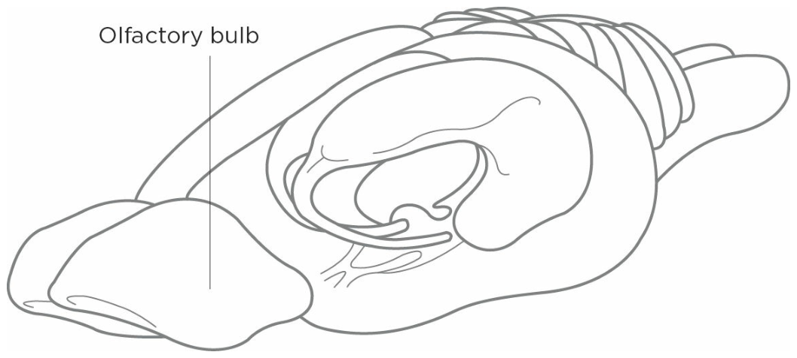
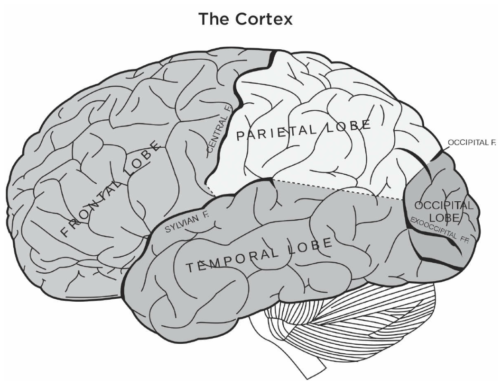
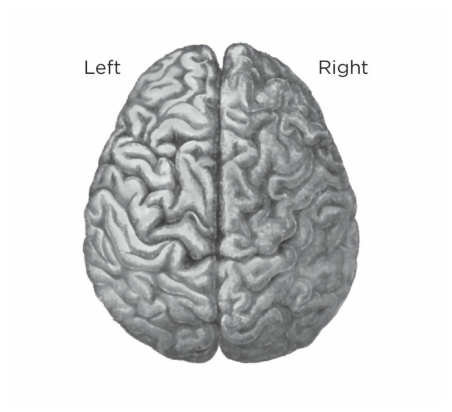
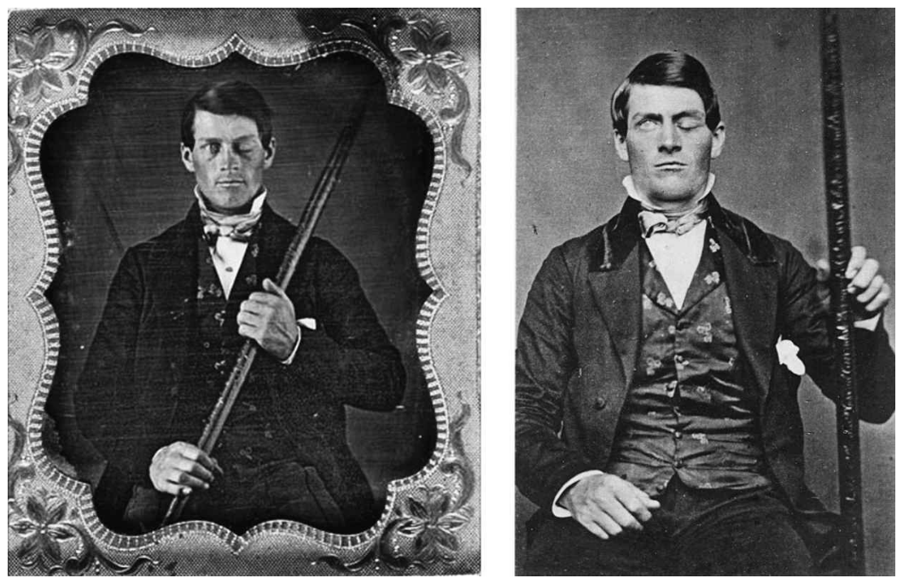
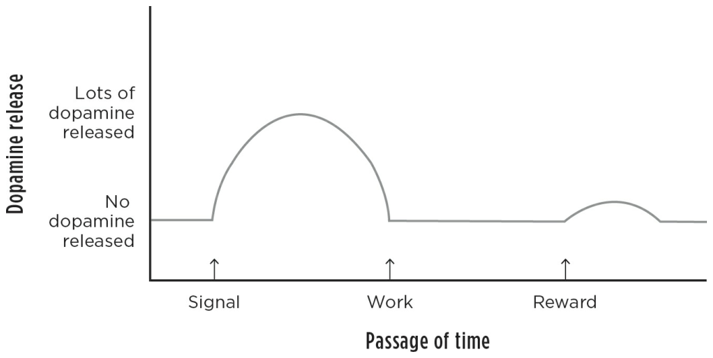
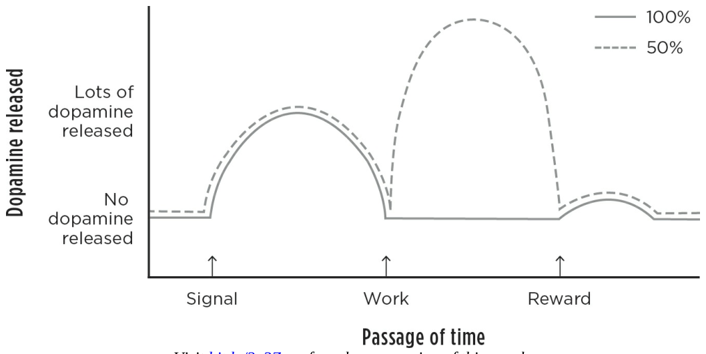
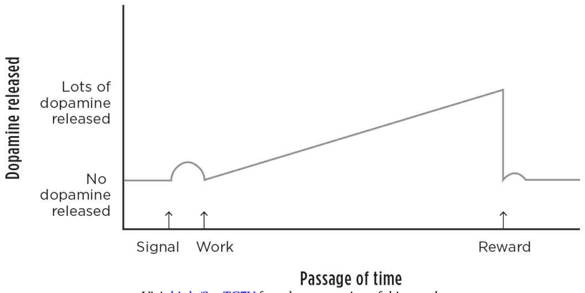

Chương 2 — Một giây trước đó
Hai
Một Giây Trước Đó
Các cơ bắp đã chuyển động, và một hành vi đã xảy ra. Có thể đó là một hành động tốt: bạn đã chạm vào cánh tay của một người đang đau khổ bằng sự đồng cảm. Có thể đó là một hành động tồi tệ: bạn đã bóp cò, nhắm vào một người vô tội. Có thể đó là một hành động tốt: bạn đã bóp cò, thu hút hỏa lực để cứu những người khác. Có thể đó là một hành động tồi tệ: bạn đã chạm vào cánh tay của ai đó, khởi đầu một chuỗi sự kiện nhục dục phản bội người thương. Những hành động mà, như đã nhấn mạnh, chỉ có thể được định nghĩa dựa trên ngữ cảnh.
Do đó, để đặt câu hỏi mở đầu cho chương này và tám chương tiếp theo: tại sao hành vi đó lại xảy ra?
Như điểm xuất phát của cuốn sách này, chúng ta biết rằng các ngành khoa học khác nhau đưa ra những câu trả lời khác nhau — vì một loại hormone nào đó; vì tiến hóa; vì những trải nghiệm thời thơ ấu hoặc gen hoặc văn hóa — và theo tiền đề trung tâm của cuốn sách, đây là những câu trả lời đan xen mật thiết vào nhau, không có câu trả lời nào đứng độc lập. Nhưng ở cấp độ gần nhất, trong chương này chúng ta hỏi: Điều gì đã xảy ra một giây trước khi hành vi đó diễn ra khiến nó phát sinh? Điều này đưa chúng ta vào lĩnh vực sinh học thần kinh, vào việc tìm hiểu bộ não đã ra lệnh cho những cơ bắp ấy.
Chương này là một trong những mỏ neo của cuốn sách. Bộ não là con đường chung cuối cùng, là ống dẫn trung gian truyền tải ảnh hưởng của tất cả các yếu tố xa hơn sẽ được đề cập trong các chương tới. Điều gì đã xảy ra một giờ, một thập kỷ, hay một triệu năm trước đó? Những gì xảy ra chính là các yếu tố tác động lên bộ não và hành vi mà nó tạo ra.
Chương này có hai thách thức lớn. Thứ nhất là độ dài khủng khiếp của nó. Xin lỗi; tôi đã cố gắng viết súc tích và phi kỹ thuật hết mức có thể, nhưng đây là kiến thức nền tảng bắt buộc phải trình bày. Thứ hai, bất kể tôi đã cố gắng phi kỹ thuật đến đâu, tài liệu này vẫn có thể gây choáng ngợp cho những ai không có nền tảng về khoa học thần kinh. Để hỗ trợ cho việc đó, xin hãy đọc qua phụ lục 1 ngay lúc này.
— Giờ chúng ta hỏi: Những điều cốt yếu nào đã xảy ra trong một giây trước khi hành vi thuận xã hội hoặc phản xã hội đó diễn ra? Hay dịch sang ngôn ngữ sinh học thần kinh: Điều gì đã diễn ra với các điện thế hoạt động, chất dẫn truyền thần kinh và mạch thần kinh ở các vùng não cụ thể trong giây đó?
BA TẦNG MANG TÍNH ẨN DỤ (NHƯNG KHÔNG THEO NGHĨA ĐEN)
Chúng ta bắt đầu bằng cách xem xét cấu trúc đại thể của não bộ, sử dụng một mô hình được đề xuất vào thập niên 1960 bởi nhà thần kinh học Paul MacLean.1 Mô hình “não bộ ba phần” (triune brain) của ông khái niệm hóa não bộ gồm ba miền chức năng:
Tầng 1: Một phần cổ xưa của não bộ, nằm ở đáy não, có mặt ở các loài từ người đến tắc kè. Tầng này điều phối các chức năng điều hòa tự động. Nếu thân nhiệt giảm, vùng não này cảm nhận được và ra lệnh cho cơ bắp run rẩy. Nếu lượng đường huyết tụt mạnh, điều đó được cảm nhận tại đây, tạo ra cảm giác đói. Nếu xảy ra chấn thương, một vòng lặp khác sẽ khởi phát phản ứng căng thẳng.
Tầng 2: Một vùng tiến hóa gần đây hơn và mở rộng mạnh ở động vật có vú. MacLean khái niệm hóa tầng này liên quan đến cảm xúc, phần nào như một phát minh của động vật có vú. Nếu bạn nhìn thấy thứ gì đó ghê rợn và kinh hoàng, tầng này gửi mệnh lệnh xuống tầng 1 cổ xưa, khiến bạn run rẩy vì cảm xúc. Nếu bạn cảm thấy buồn bã vì không được yêu thương, các vùng ở đây thúc đẩy tầng 1 tạo ra cơn thèm đồ ăn vỗ về tinh thần. Nếu bạn là một loài gặm nhấm và ngửi thấy mùi mèo, các tế bào thần kinh ở đây khiến tầng 1 khởi phát phản ứng căng thẳng.
Tầng 3: Tầng vỏ não mới (neocortex) tiến hóa gần đây nhất, nằm ở bề mặt phía trên của não bộ. Theo tỷ lệ, động vật linh trưởng dành nhiều phần não bộ cho tầng này hơn các loài khác. Nhận thức, lưu trữ trí nhớ, xử lý cảm giác, tư duy trừu tượng, triết học, suy ngẫm nội tâm. Đọc một đoạn sách rùng rợn, tầng 3 báo hiệu cho tầng 2 khiến bạn cảm thấy sợ hãi, thúc đẩy tầng 1 khởi phát cơn run. Xem một quảng cáo bánh Oreo và cảm thấy thèm — tầng 3 tác động lên tầng 2 và tầng 1. Suy ngẫm về việc những người thân yêu sẽ không sống mãi mãi, hay về trẻ em trong các trại tị nạn, hoặc cách cây nhà của người Na’vi bị bọn người khốn nạn phá hủy trong phim Avatar (dù thực tế là, khoan đã, người Na’vi đâu có thật!), thế là tầng 3 kéo tầng 2 và tầng 1 vào cuộc, và bạn cảm thấy buồn bã đồng thời có cùng kiểu phản ứng căng thẳng như khi bạn đang chạy trốn một con sư tử.
Như vậy chúng ta đã chia bộ não thành ba ngăn chức năng, với những ưu điểm và nhược điểm thường thấy khi phân loại một phổ liên tục. Nhược điểm lớn nhất là sự đơn giản hóa quá mức này. Ví dụ:
a. Về mặt giải phẫu, có sự chồng chéo đáng kể giữa ba tầng (chẳng hạn, một phần của vỏ não tốt nhất nên được coi là một phần của tầng 2; hãy chờ xem). b. Dòng thông tin và mệnh lệnh không chỉ đi từ trên xuống dưới, từ tầng 3 xuống 2 rồi 1. Một ví dụ kỳ lạ nhưng tuyệt vời được khám phá ở chương 15: nếu ai đó đang cầm một ly nước lạnh (nhiệt độ được xử lý ở tầng 1), họ có nhiều khả năng đánh giá người họ mới gặp là có tính cách lạnh lùng (tầng 3). c. Các khía cạnh tự động của hành vi (nói một cách đơn giản là phạm vi của tầng 1), cảm xúc (tầng 2) và suy nghĩ (tầng 3) không thể tách rời nhau. d. Mô hình ba phần dễ khiến người ta lầm tưởng rằng tiến hóa cứ thế đắp thêm từng tầng mới mà không có bất kỳ thay đổi nào xảy ra ở các tầng đã có sẵn.
Bất chấp những hạn chế này, điều mà chính MacLean cũng nhấn mạnh, mô hình này sẽ là một phép ẩn dụ tổ chức hữu ích cho chúng ta.
HỆ VIỀN
Để hiểu được những hành vi tốt nhất và tệ nhất của chúng ta, cả tính tự động, cảm xúc lẫn nhận thức đều phải được xem xét; tôi tạm thời bắt đầu một cách tùy ý với tầng 2 và sự nhấn mạnh vào cảm xúc của nó.
Các nhà khoa học thần kinh đầu thế kỷ XX nghĩ rằng chức năng của tầng 2 quá rõ ràng. Hãy lấy con vật thí nghiệm tiêu chuẩn của bạn, một con chuột, và kiểm tra não nó. Ngay phía trước sẽ là hai thùy khổng lồ này, gọi là “hành khứu giác” (mỗi bên mũi một cái), vùng tiếp nhận mùi hương sơ cấp.

Các nhà khoa học thần kinh thời đó tự hỏi hai hành khứu giác khổng lồ này ở loài gặm nhấm nói chuyện với những phần nào của não (tức là chúng gửi các sợi trục chiếu đến đâu). Những vùng não nào chỉ cách việc tiếp nhận thông tin khứu giác một khớp thần kinh (synapse), vùng nào cách hai khớp, ba khớp, vân vân?
Và chính các cấu trúc tầng 2 là nơi nhận những thông báo đầu tiên. À, mọi người kết luận, phần não này hẳn là xử lý mùi hương, và thế là nó được đặt tên là rhinencephalon — não mũi.
Trong khi đó, vào những năm ba mươi và bốn mươi, các nhà khoa học thần kinh như MacLean thời trẻ, James Papez, Paul Bucy và Heinrich Klüver bắt đầu tìm ra chức năng thực sự của các cấu trúc tầng 2. Chẳng hạn, nếu bạn gây tổn thương (tức phá hủy) các cấu trúc tầng 2, điều này tạo ra “hội chứng Klüver-Bucy”, với đặc trưng là những bất thường trong hành vi xã hội, đặc biệt là trong hành vi tình dục và hung hăng. Họ kết luận rằng những cấu trúc này, chẳng bao lâu sau được gọi là “hệ viền” (limbic system, vì những lý do khó hiểu), là về cảm xúc.
Não mũi hay hệ viền? Khứu giác hay cảm xúc? Những cuộc tranh luận nảy lửa diễn ra cho đến khi có người chỉ ra điều hiển nhiên — đối với một con chuột, cảm xúc và khứu giác gần như đồng nghĩa, bởi hầu hết mọi kích thích môi trường khơi gợi cảm xúc ở loài gặm nhấm đều là mùi hương. Hòa bình lập lại. Ở loài gặm nhấm, đầu vào khứu giác là thứ hệ viền phụ thuộc nhiều nhất để nhận tin tức cảm xúc từ thế giới. Ngược lại, hệ viền của động vật linh trưởng được cung cấp thông tin nhiều hơn từ đầu vào thị giác.
Chức năng hệ viền nay được công nhận là trung tâm của những cảm xúc thúc đẩy các hành vi tốt nhất và tệ nhất của chúng ta, và các nghiên cứu sâu rộng đã khám phá ra chức năng của các cấu trúc thuộc hệ này (ví dụ: hạch hạnh nhân, hồi hải mã, vách ngăn, cuống tuyến tùng và thể vú).
Thực sự không có những “trung tâm” trong não “dành cho” các hành vi cụ thể. Điều này đặc biệt đúng với hệ viền và cảm xúc. Đúng là có một tiểu vùng nhỏ của vỏ não vận động gần như là “trung tâm” để khiến ngón út trái của bạn co lại; các vùng khác có vai trò kiểu “trung tâm” trong việc điều hòa nhịp thở hoặc thân nhiệt. Nhưng chắc chắn không có trung tâm nào cho cảm giác cáu kỉnh hay hứng tình, cho cảm giác hoài niệm ngọt ngào pha chút đắng cay hay sự che chở ấm áp lẫn chút khinh miệt, hoặc cho cái cảm giác thứ-gì-mà-gọi-là-tình-yêu đó. Vậy nên không có gì ngạc nhiên khi hệ thống mạch nối giữa các cấu trúc hệ viền khác nhau lại phức tạp vô cùng.
Hệ Thần Kinh Tự Chủ và Các Vùng Lõi Cổ Xưa của Não Bộ
Các vùng của hệ viền tạo thành những mạch kích thích và ức chế phức tạp. Sẽ dễ hiểu điều này hơn nếu nắm được khát khao sâu sắc của mọi cấu trúc hệ viền — đó là tác động lên những gì vùng dưới đồi (hypothalamus) làm.
Tại sao? Vì tầm quan trọng của nó. Vùng dưới đồi, một cấu trúc hệ viền, là giao diện giữa tầng 1 và tầng 2, giữa các phần điều hòa cốt lõi và phần cảm xúc của não bộ.
Phù hợp với điều đó, vùng dưới đồi nhận lượng lớn đầu vào từ các cấu trúc tầng 2 hệ viền nhưng lại gửi phần lớn các đường chiếu tới các vùng tầng 1. Đây là vùng não giữa (midbrain) và thân não (brain stem) cổ xưa về mặt tiến hóa, vốn điều hòa các phản ứng tự động khắp cơ thể.
Đối với một loài bò sát, sự điều hòa tự động như vậy khá đơn giản. Nếu cơ bắp hoạt động mạnh, điều này được cảm nhận bởi các tế bào thần kinh khắp cơ thể, gửi tín hiệu lên tủy sống tới các vùng tầng 1, dẫn đến tín hiệu truyền ngược xuống tủy sống làm tăng nhịp tim và huyết áp; kết quả là cung cấp thêm oxy và glucose cho cơ bắp. Ăn ngấu nghiến, thành dạ dày căng ra; các tế bào thần kinh gắn ở đó cảm nhận điều này và truyền tin, chẳng mấy chốc mạch máu ở ruột giãn ra, tăng lưu lượng máu và hỗ trợ tiêu hóa. Quá nóng? Máu được đưa ra bề mặt cơ thể để tản nhiệt.
— Tất cả những điều này đều diễn ra tự động, hay “tự chủ” (autonomic). Và do đó các vùng não giữa và thân não, cùng với các đường chiếu xuống tủy sống và ra khắp cơ thể, được gọi chung là “hệ thần kinh tự chủ” (autonomic nervous system).*
Vậy vùng dưới đồi đóng vai trò gì ở đây? Nó là phương tiện để hệ viền tác động lên chức năng tự chủ, là cách tầng 2 nói chuyện với tầng 1. Khi bàng quang đầy với thành cơ căng ra, mạch não giữa/thân não sẽ bỏ phiếu cho việc đi tiểu. Khi tiếp xúc với thứ gì đó đủ kinh hoàng, các cấu trúc hệ viền, thông qua vùng dưới đồi, thuyết phục não giữa và thân não làm điều tương tự. Đây là cách cảm xúc làm thay đổi các chức năng cơ thể, lý do vì sao mọi con đường hệ viền cuối cùng đều dẫn về vùng dưới đồi.*
Hệ thần kinh tự chủ gồm hai phần — hệ thần kinh giao cảm và hệ thần kinh đối giao cảm, với chức năng gần như trái ngược nhau.
Hệ thần kinh giao cảm (SNS) điều phối phản ứng của cơ thể trước các hoàn cảnh kích thích, chẳng hạn như tạo ra phản ứng căng thẳng nổi tiếng “chiến hay chạy” (fight or flight). Nói theo câu đùa nhạt nhẽo hay kể cho sinh viên y khoa năm nhất, SNS điều phối “bốn chữ F — fear (sợ), fight (chiến), flight (chạy) và sex (tình dục).” Các nhân não giữa/thân não cụ thể gửi các đường chiếu SNS dài xuống tủy sống và tới các tiền đồn khắp cơ thể, nơi đầu tận sợi trục giải phóng chất dẫn truyền thần kinh norepinephrine. Có một ngoại lệ khiến SNS trở nên quen thuộc hơn. Ở tuyến thượng thận, thay vì giải phóng norepinephrine (còn gọi là noradrenaline), nó giải phóng epinephrine (còn gọi là adrenaline nổi tiếng).*
Trong khi đó, hệ thần kinh đối giao cảm (PNS) bắt nguồn từ
các nhân não giữa/thân não khác chiếu xuống tủy sống tới cơ thể. Trái ngược với SNS và bốn chữ F, PNS liên quan đến các trạng thái bình tĩnh, nghỉ ngơi dưỡng sức. SNS làm tăng nhịp tim; PNS làm chậm nhịp tim. PNS thúc đẩy tiêu hóa; SNS ức chế tiêu hóa (điều này hợp lý — nếu bạn đang chạy thục mạng để tránh trở thành bữa trưa của kẻ khác, đừng lãng phí năng lượng tiêu hóa bữa sáng).* Và như chúng ta sẽ thấy ở chương 14, nếu nhìn thấy ai đó đau đớn kích hoạt SNS của bạn, bạn có khả năng bận tâm đến nỗi khổ sở của chính mình thay vì giúp đỡ; bật PNS lên thì điều ngược lại xảy ra. Vì SNS và PNS làm những việc trái ngược nhau, hiển nhiên PNS sẽ giải phóng một chất dẫn truyền thần kinh khác từ đầu tận sợi trục của nó — acetylcholine.*
Có một cách thứ hai, quan trọng không kém, mà cảm xúc tác động lên cơ thể. Cụ thể, vùng dưới đồi cũng điều hòa sự giải phóng nhiều loại hormone; điều này sẽ được đề cập ở chương 4.
— Vậy là hệ viền gián tiếp điều hòa chức năng tự chủ và sự giải phóng hormone. Điều này liên quan gì đến hành vi? Rất nhiều — bởi vì trạng thái tự chủ và nội tiết của cơ thể phản hồi ngược lại lên não bộ, ảnh hưởng đến hành vi (thường là trong vô thức).* Hãy đón xem thêm ở chương 3 và chương 4.
Giao Diện Giữa Hệ Viền và Vỏ Não
Đã đến lúc thêm vỏ não (cortex) vào bức tranh. Như đã lưu ý, đây là bề mặt phía trên của não bộ (tên của nó bắt nguồn từ chữ Latin cortic, nghĩa là “vỏ cây”) và là phần mới nhất của não.
Vỏ não là viên ngọc quý sáng chói, logic, giàu tính phân tích của tầng 3. Hầu hết thông tin cảm giác chảy về đây để được giải mã. Đây là nơi cơ bắp nhận lệnh chuyển động, nơi ngôn ngữ được hiểu và tạo ra, nơi ký ức được lưu trữ, nơi kỹ năng không gian và toán học trú ngụ, nơi các quyết định điều hành được đưa ra. Nó nằm lơ lửng phía trên hệ viền, củng cố quan điểm của các triết gia ít nhất từ thời Descartes vốn nhấn mạnh sự phân đôi giữa tư duy và cảm xúc.
Tất nhiên, điều đó hoàn toàn sai, như minh họa qua việc nhiệt độ của một chiếc cốc — thứ được xử lý ở vùng dưới đồi — làm thay đổi đánh giá về sự lạnh lùng trong tính cách của ai đó. Cảm xúc lọc bản chất và độ chính xác của những gì được ghi nhớ. Tổn thương do đột quỵ ở một số vùng vỏ não làm mất khả năng nói; một số bệnh nhân định tuyến lại thế giới ngôn ngữ trên não qua những đường vòng cảm xúc của hệ viền — họ có thể hát những gì họ muốn nói. Vỏ não và hệ viền không hề tách rời, vì vô số đường chiếu sợi trục chạy qua lại giữa hai bên. Điều cốt yếu là những đường chiếu đó mang tính hai chiều — hệ viền nói chuyện với vỏ não, chứ không chỉ đơn thuần bị vỏ não kìm hãm. Sự phân đôi sai lầm giữa suy nghĩ và cảm giác được trình bày trong tác phẩm kinh điển Sai lầm của Descartes (Descartes’ Error) của nhà thần kinh học Antonio Damasio thuộc Đại học Nam California; công trình của ông sẽ được thảo luận sau.2
Trong khi vùng dưới đồi cư ngụ tại giao diện của tầng 1 và tầng 2, thì chính vỏ não trán cực kỳ thú vị mới là giao diện giữa tầng 2 và tầng 3. Hiểu biết then chốt về vỏ não trán được cung cấp vào thập niên 1960 bởi một người khổng lồ của ngành khoa học thần kinh, Walle Nauta của MIT.*3 Nauta đã nghiên cứu xem những vùng não nào gửi sợi trục tới vỏ não trán và những vùng nào nhận sợi trục từ nó. Và vỏ não trán đan xen hai chiều mật thiết với hệ viền, khiến ông đề xuất rằng vỏ não trán là một thành viên bán chính thức của hệ viền. Đương nhiên, mọi người đều nghĩ ông bị điên. Vỏ não trán là phần tiến hóa gần đây nhất của vỏ não vô cùng cao quý — lý do duy nhất khiến vỏ não trán chịu hạ mình xuống khu ổ chuột hệ viền chỉ có thể là để rao giảng về lao động lương thiện và sự tiết độ Kitô giáo cho đám trẻ bụi đời ở đó.
Đương nhiên, Nauta đã đúng. Trong các hoàn cảnh khác nhau, vỏ não trán và hệ viền kích thích hoặc ức chế lẫn nhau, hợp tác và phối hợp, hoặc cãi vã và làm việc ngược chiều nhau. Nó thực sự là một thành viên danh dự của hệ viền. Và những tương tác giữa vỏ não trán với các cấu trúc hệ viền (khác) là cốt lõi của phần lớn cuốn sách này.
Thêm hai chi tiết nữa. Thứ nhất, vỏ não không phải một bề mặt nhẵn mà được gấp nếp thành các cuộn não. Các nếp gấp tạo thành một siêu cấu trúc gồm bốn thùy riêng biệt: thùy thái dương, thùy đỉnh, thùy chẩm và thùy trán, mỗi thùy có các chức năng khác nhau.

Chức Năng Chuyên Biệt Hóa Bán Cầu Não

Tư duy phân tích Nhận thức chú trọng chi tiết Sắp xếp trình tự có trật tự Tư duy lý tính Ngôn ngữ Thận trọng Lập kế hoạch Toán/khoa học Logic Thị giác trường phải Kỹ năng vận động bên phải
Tư duy trực giác Nhận thức tổng thể Sắp xếp trình tự ngẫu nhiên Tư duy cảm xúc Phi ngôn ngữ Mạo hiểm Bốc đồng Viết sáng tạo/nghệ thuật Trí tưởng tượng Thị giác trường trái Kỹ năng vận động bên trái
Thứ hai, hiển nhiên não bộ có bên trái và bên phải, hay còn gọi là hai “bán cầu”, gần như đối xứng gương với nhau.
Do đó, ngoại trừ tương đối ít cấu trúc nằm trên đường giữa, các vùng não đều đi theo cặp (hạch hạnh nhân trái và phải, hồi hải mã trái và phải, thùy thái dương trái và phải, v.v.). Các chức năng thường được chuyên biệt hóa theo bên (lateralized), chẳng hạn như hồi hải mã trái và phải có các chức năng khác nhau nhưng liên quan đến nhau. Sự chuyên biệt hóa bên lớn nhất xảy ra ở vỏ não; bán cầu trái thiên về phân tích, bán cầu phải tham gia nhiều hơn vào trực giác và sáng tạo. Những sự tương phản này đã thu hút trí tưởng tượng của công chúng, với sự chuyên biệt hóa vỏ não bị nhiều người thổi phồng đến mức phi lý, nơi kiểu người “não trái” mang hàm ý soi mói tính toán từng đồng từng cắc và kiểu người “não phải” là về vẽ mạn đà la hay hát cùng cá voi. Thực tế thì sự khác biệt chức năng giữa hai bán cầu nhìn chung rất tinh tế, và tôi hầu như sẽ bỏ qua sự chuyên biệt hóa bên này.
Giờ chúng ta đã sẵn sàng xem xét các vùng não giữ vai trò trung tâm nhất đối với cuốn sách này, cụ thể là hạch hạnh nhân, vỏ não trán, và hệ thống dopamine trung não-viền / trung não-vỏ não (thảo luận về các vùng phụ khác sẽ được gộp vào dưới các mục của ba vùng này). Chúng ta bắt đầu với vùng có thể coi là trung tâm nhất đối với những hành vi tệ nhất của chúng ta.
HẠCH HẠNH NHÂN
Hạch hạnh nhân* (amygdala) là cấu trúc hệ viền điển hình, nằm bên dưới vỏ não ở thùy thái dương. Nó giữ vai trò trung tâm trong việc điều hòa sự hung hăng, cùng với các hành vi khác cho chúng ta biết rất nhiều điều về sự hung hăng.
Cái Nhìn Đầu Tiên về Hạch Hạnh Nhân và Sự Hung Hăng
Bằng chứng về vai trò của hạch hạnh nhân trong sự hung hăng rất phong phú, dựa trên các phương pháp nghiên cứu sẽ sớm trở nên quen thuộc.
Đầu tiên là phương pháp tương quan “ghi điện”. Cắm điện cực ghi vào hạch hạnh nhân* của nhiều loài và xem khi nào các tế bào thần kinh ở đó phát ra điện thế hoạt động; hóa ra là khi con vật đang hung hăng.* Theo một cách tiếp cận liên quan, xác định vùng não nào tiêu thụ thêm oxy hoặc glucose, hoặc tổng hợp các protein liên quan đến hoạt động, trong lúc hung hăng — hạch hạnh nhân đứng đầu danh sách.
Vượt ra ngoài mối tương quan đơn thuần, nếu bạn gây tổn thương hạch hạnh nhân ở một con vật, tỷ lệ hung hăng sẽ giảm xuống. Điều tương tự xảy ra thoáng qua khi bạn làm im lặng tạm thời hạch hạnh nhân bằng cách tiêm Novocain vào đó. Ngược lại, cấy điện cực kích thích các tế bào thần kinh ở đó, hoặc xịt vào các chất dẫn truyền thần kinh kích thích (hãy chờ xem), sẽ châm ngòi cho sự hung hăng.4
Cho đối tượng người xem những bức ảnh khơi gợi cơn giận, và hạch hạnh nhân kích hoạt (như thấy qua chẩn đoán hình ảnh thần kinh). Cắm một điện cực vào hạch hạnh nhân của ai đó và kích thích nó (như được thực hiện trước một số loại phẫu thuật thần kinh) sẽ tạo ra cơn thịnh nộ.
Dữ liệu thuyết phục nhất liên quan đến những trường hợp hiếm gặp ở người có tổn thương giới hạn ở hạch hạnh nhân, do một loại viêm não hoặc một rối loạn bẩm sinh gọi là bệnh Urbach-Wiethe, hoặc do hạch hạnh nhân bị phá hủy bằng phẫu thuật để kiểm soát các cơn động kinh nặng, kháng thuốc bắt nguồn từ đó.5 Những cá nhân này bị suy giảm khả năng phát hiện biểu cảm khuôn mặt giận dữ (trong khi vẫn nhận diện tốt các trạng thái cảm xúc khác — hãy chờ xem).
Vậy tổn thương hạch hạnh nhân làm gì đối với hành vi hung hăng? Điều này được nghiên cứu ở những người được phẫu thuật cắt bỏ hạch hạnh nhân không phải để kiểm soát động kinh mà để kiểm soát sự hung hăng. Kiểu phẫu thuật tâm thần này đã châm ngòi cho tranh cãi dữ dội vào thập niên 1970. Và tôi không nói đến chuyện các nhà khoa học không chào hỏi nhau tại hội nghị. Tôi muốn nói đến một cơn bão dư luận thực sự.
Vấn đề này chạm vào những cột thu lôi đạo đức sinh học: Thế nào được tính là hung hăng bệnh lý? Ai là người quyết định? Những biện pháp can thiệp nào khác đã được thử mà không thành công? Liệu một số nhóm người cực kỳ hung hăng có dễ bị đưa lên bàn mổ hơn những người khác không? Thế nào được coi là chữa khỏi?6
Hầu hết các trường hợp này liên quan đến những bệnh nhân động kinh hiếm gặp mà sự khởi phát cơn động kinh đi kèm với sự hung hăng không thể kiểm soát, và mục tiêu là kiềm chế hành vi đó (những bài báo này có tiêu đề kiểu như “Tác động lâm sàng và sinh lý của phẫu thuật cắt bỏ hạch hạnh nhân hai bên định vị lập thể đối với sự hung hăng khó trị”). Cơn bão thực sự nhắm vào việc cắt bỏ hạch hạnh nhân một cách cưỡng bức ở những người không bị động kinh nhưng có tiền sử hung hăng nghiêm trọng. Chà, làm việc này có thể hữu ích sâu sắc. Hoặc mang tính Orwell toàn trị. Đây là một câu chuyện dài và đen tối mà tôi xin để dành cho một dịp khác.
Việc phá hủy hạch hạnh nhân ở người có làm giảm sự hung hăng không? Khá rõ ràng là có, khi bạo lực là một cơn bùng phát phản xạ, chưa định hình xảy ra ngay trước cơn động kinh. Nhưng với phẫu thuật được thực hiện chỉ nhằm kiểm soát hành vi, câu trả lời là, ờ, có thể — sự không đồng nhất của bệnh nhân và phương pháp phẫu thuật, việc thiếu chẩn đoán hình ảnh thần kinh hiện đại để xác định chính xác phần nào của hạch hạnh nhân bị phá hủy ở mỗi cá nhân, và sự thiếu chính xác trong dữ liệu hành vi (với các bài báo ghi nhận tỷ lệ “thành công” từ 33 đến 100 phần trăm) khiến mọi thứ không thể kết luận chắc chắn. Thủ thuật này gần như đã hoàn toàn bị loại bỏ khỏi thực hành lâm sàng.
Mối liên hệ giữa hạch hạnh nhân và sự hung hăng xuất hiện trong hai vụ án bạo lực khét tiếng. Vụ thứ nhất liên quan đến Ulrike Meinhof, người đồng sáng lập Nhóm Hồng quân (còn gọi là Băng đảng Baader-Meinhof) năm 1968, một nhóm khủng bố chịu trách nhiệm cho các vụ đánh bom và cướp ngân hàng ở Tây Đức. Meinhof từng có một cuộc sống bình thường trước đó với tư cách nhà báo trước khi bị cực đoan hóa theo hướng bạo lực. Trong phiên tòa xét xử tội giết người năm 1976, bà được phát hiện treo cổ trong phòng giam (tự tử hay bị sát hại? vẫn chưa rõ). Năm 1962, Meinhof từng phẫu thuật cắt bỏ một khối u não lành tính; cuộc khám nghiệm tử thi năm 1976 cho thấy phần còn sót lại của khối u và mô sẹo phẫu thuật đã chèn ép lên hạch hạnh nhân của bà.7
Vụ thứ hai liên quan đến Charles Whitman, tay súng bắn tỉa “Tháp Texas” năm 1966, người sau khi giết vợ và mẹ mình đã nổ súng từ trên tháp tại Đại học Texas ở Austin, giết chết mười sáu người và làm bị thương ba mươi hai người, một trong những vụ thảm sát trường học đầu tiên. Whitman thực sự từng là một Hướng đạo sinh Đại bàng và ca sĩ hợp xướng nhà thờ thời thơ ấu, một sinh viên ngành kỹ thuật kết hôn hạnh phúc với chỉ số IQ thuộc top 1 phần trăm. Trong năm trước đó, anh ta đã đi khám bác sĩ, phàn nàn về những cơn đau đầu dữ dội và những thôi thúc bạo lực (chẳng hạn như muốn bắn người từ tháp trường đại học). Anh ta để lại những bức thư bên thi thể vợ và mẹ, bày tỏ tình yêu thương và sự bối rối trước hành động của mình: “Tôi không thể lý giải một cách hợp lý [sic] bất kỳ lý do cụ thể nào cho việc [giết bà ấy],” và “đừng có chút nghi ngờ nào trong tâm trí bạn rằng tôi yêu người phụ nữ này bằng cả trái tim.” Thư tuyệt mệnh của anh ta yêu cầu khám nghiệm tử thi bộ não mình, và đề nghị trao toàn bộ số tiền anh có cho một quỹ sức khỏe tâm thần. Kết quả khám nghiệm chứng minh trực giác của anh ta đúng — Whitman có một khối u nguyên bào thần kinh đệm (glioblastoma) đè lên hạch hạnh nhân. Khối u của Whitman có “gây ra” bạo lực của anh ta không? Có lẽ không theo nghĩa cứng nhắc “u hạch hạnh nhân = kẻ giết người”, vì anh ta có những yếu tố nguy cơ tương tác với các vấn đề thần kinh của mình. Whitman lớn lên thường xuyên bị cha đánh đập và chứng kiến mẹ cùng anh chị em chịu cảnh tương tự. Chàng Hướng đạo sinh Đại bàng từng hát thánh ca này đã nhiều lần bạo hành thể xác vợ mình và từng bị tòa án binh khi còn là lính Thủy quân lục chiến vì đe dọa hành hung một người lính khác.* Và, có lẽ là dấu hiệu của một sợi dây xuyên suốt gia đình, em trai anh ta bị sát hại ở tuổi hai mươi bốn trong một vụ ẩu đả ở quán bar.8
Một Miền Chức Năng Hoàn Toàn Khác của Hạch Hạnh Nhân Bước Ra Sân Khấu Chính
Như vậy, nhiều bằng chứng đáng kể gắn kết hạch hạnh nhân với sự hung hăng. Nhưng nếu bạn hỏi các chuyên gia về hạch hạnh nhân xem hành vi nào khiến họ nghĩ đến cấu trúc não yêu thích của mình đầu tiên, “hung hăng” sẽ không đứng đầu danh sách. Đó sẽ là nỗi sợ hãi và lo âu.9 Điều cốt yếu là vùng não tham gia nhiều nhất vào cảm giác sợ hãi và lo âu lại chính là vùng tham gia nhiều nhất vào việc tạo ra sự hung hăng.
Mối liên hệ giữa hạch hạnh nhân và nỗi sợ dựa trên những bằng chứng tương tự như bằng chứng ủng hộ mối liên hệ giữa hạch hạnh nhân và sự hung hăng.10 Ở động vật thí nghiệm, điều này bao gồm gây tổn thương cấu trúc này, phát hiện hoạt động ở các tế bào thần kinh của nó bằng “điện cực ghi”,
kích thích điện nó, hoặc thao tác gen trong đó. Tất cả đều gợi ý một vai trò then chốt của hạch hạnh nhân trong việc nhận thức các kích thích gây sợ hãi và biểu lộ nỗi sợ. Hơn nữa, nỗi sợ kích hoạt hạch hạnh nhân ở người, với mức độ kích hoạt càng cao thì càng dự báo nhiều dấu hiệu hành vi sợ hãi hơn.
Trong một nghiên cứu, các đối tượng nằm trong máy quét não chơi một trò chơi điện tử kiểu Ms. Pac-Man từ địa ngục, nơi họ bị một chấm tròn rượt đuổi trong mê cung; nếu bị bắt, họ sẽ bị sốc điện.11 Khi mọi người đang né tránh chấm tròn, hạch hạnh nhân im lặng. Tuy nhiên, hoạt động của nó tăng lên khi chấm tròn tiến lại gần; cú sốc điện càng mạnh thì khoảng cách chấm tròn bắt đầu kích hoạt hạch hạnh nhân càng xa, mức kích hoạt càng mạnh và cảm giác hoảng loạn tự báo cáo càng lớn.
Trong một nghiên cứu khác, các đối tượng chờ đợi một khoảng thời gian không xác định để nhận một cú sốc điện.12 Sự thiếu khả năng dự đoán và kiểm soát này gây khó chịu đến mức nhiều người chọn nhận ngay một cú sốc mạnh hơn. Và ở những người còn lại, khoảng thời gian thấp thỏm chờ đợi càng lúc càng kích hoạt hạch hạnh nhân mạnh hơn.
Như vậy, hạch hạnh nhân của con người ưu tiên phản ứng với các kích thích khơi gợi nỗi sợ, ngay cả những kích thích thoáng qua đến mức nằm dưới ngưỡng nhận thức có ý thức.
Bằng chứng mạnh mẽ ủng hộ vai trò của hạch hạnh nhân trong xử lý nỗi sợ đến từ rối loạn căng thẳng sau sang chấn (PTSD). Ở những người mắc PTSD, hạch hạnh nhân phản ứng quá mức với các kích thích gây sợ nhẹ và chậm dịu xuống sau khi bị kích hoạt.13 Hơn nữa, hạch hạnh nhân phình to về kích thước khi mắc PTSD kéo dài. Vai trò của căng thẳng trong sự phình to này sẽ được đề cập ở chương 4.
Hạch hạnh nhân cũng tham gia vào việc biểu lộ sự lo âu.14 Hãy lấy một bộ bài — một nửa màu đen, một nửa màu đỏ; bạn sẽ đặt cược bao nhiêu rằng lá bài trên cùng màu đỏ? Đó là về rủi ro. Đây là một bộ bài khác — có ít nhất một lá đen, ít nhất một lá đỏ; bạn sẽ đặt cược bao nhiêu rằng lá bài trên cùng màu đỏ? Đó là về sự mơ hồ. Hai tình huống mang xác suất giống hệt nhau, nhưng mọi người cảm thấy lo âu hơn trước kịch bản thứ hai và kích hoạt hạch hạnh nhân nhiều hơn. Hạch hạnh nhân đặc biệt nhạy cảm với những hoàn cảnh bất ổn mang tính xã hội. Một con khỉ rhesus đực cấp cao đang trong mối quan hệ cặp đôi tình dục với một con cái; ở điều kiện thứ nhất, con cái được đặt ở phòng khác, nơi con đực có thể nhìn thấy nó. Ở điều kiện thứ hai, nó ở phòng khác cùng với một đối thủ của con đực kia. Không có gì ngạc nhiên, tình huống đó kích hoạt hạch hạnh nhân. Điều đó là về sự hung hăng hay lo âu? Dường như là vế sau — mức độ kích hoạt không tương quan với lượng hành vi hung hăng và tiếng kêu mà con đực tạo ra, hay lượng testosterone tiết ra.
Thay vào đó, nó tương quan với mức độ lo âu biểu lộ (ví dụ: đánh lập cập răng, hoặc tự gãi mình).
Hạch hạnh nhân gắn liền với sự bất định xã hội theo những cách khác. Trong một nghiên cứu hình ảnh học thần kinh, đối tượng tham gia một trò chơi cạnh tranh với một nhóm người chơi khác; kết quả được sắp đặt sao cho đối tượng rơi vào khoảng giữa bảng xếp hạng.15 Các nhà thí nghiệm sau đó thao túng kết quả trò chơi để thứ hạng của đối tượng hoặc giữ ổn định hoặc dao động dữ dội. Thứ hạng ổn định kích hoạt các phần của vỏ não trán mà chúng ta sẽ sớm xem xét. Sự bất ổn kích hoạt vỏ não trán cộng thêm hạch hạnh nhân. Việc không chắc chắn về vị trí của mình thật đáng bất an.
Một nghiên cứu khác khám phá sinh học thần kinh của sự tuân thủ đám đông.16 Nói đơn giản, một đối tượng là thành viên của một nhóm (trong đó, một cách bí mật, những người còn lại đều là diễn viên đóng thế); họ được cho xem chữ “X”, rồi được hỏi: “Bạn đã thấy gì?” Tất cả những người khác đều nói “Y”. Liệu đối tượng có nói dối và cũng nói “Y” không? Thường là có. Những đối tượng giữ vững lập trường với chữ “X” cho thấy sự kích hoạt hạch hạnh nhân.
Cuối cùng, việc kích hoạt các mạch cụ thể bên trong hạch hạnh nhân ở chuột bật và tắt sự lo âu; kích hoạt các mạch khác khiến chuột không thể phân biệt giữa môi trường an toàn và môi trường gây lo âu.*17
Hạch hạnh nhân cũng giúp điều phối cả nỗi sợ bẩm sinh và nỗi sợ học được.18 Cốt lõi của nỗi sợ bẩm sinh (còn gọi là ám ảnh sợ / phobia) là bạn không cần phải học qua thử và sai rằng thứ gì đó gây khó chịu. Ví dụ, một con chuột sinh ra trong phòng thí nghiệm, chỉ từng tiếp xúc với những con chuột khác và sinh viên cao học, vẫn sợ hãi và né tránh mùi mèo theo bản năng. Trong khi các chứng ám ảnh sợ khác nhau kích hoạt các mạch não hơi khác nhau (chẳng hạn, chứng sợ nha sĩ liên quan đến vỏ não nhiều hơn chứng sợ rắn), tất cả chúng đều kích hoạt hạch hạnh nhân.
Nỗi sợ bẩm sinh như vậy tương phản với những thứ chúng ta học cách sợ — một khu phố tồi tệ, một lá thư từ Sở Thuế vụ. Sự phân đôi giữa nỗi sợ bẩm sinh và nỗi sợ học được thực ra hơi mờ nhạt.19 Ai cũng biết con người bẩm sinh sợ rắn và nhện. Nhưng một số người lại nuôi chúng làm thú cưng, đặt cho chúng những cái tên dễ thương.* Thay vì nỗi sợ tất yếu, chúng ta thể hiện “sự học tập chuẩn bị sẵn” (prepared learning) — học cách sợ rắn và nhện dễ dàng hơn nhiều so với gấu trúc hay chó săn thỏ beagle.
Điều tương tự cũng xảy ra ở các loài linh trưởng khác. Chẳng hạn, những con khỉ phòng thí nghiệm chưa bao giờ gặp rắn (hay hoa giả) có thể bị điều kiện hóa để sợ rắn dễ dàng hơn hoa giả. Như chúng ta sẽ thấy ở chương sau, con người thể hiện sự học tập chuẩn bị sẵn, có khuynh hướng dễ bị điều kiện hóa để sợ những người có kiểu ngoại hình nhất định.
Sự phân biệt mờ nhạt giữa nỗi sợ bẩm sinh và nỗi sợ học được khớp rất đẹp với cấu trúc của hạch hạnh nhân. Nhân trung tâm hạch hạnh nhân (central amygdala) cổ xưa về mặt tiến hóa đóng vai trò then chốt trong các nỗi sợ bẩm sinh. Bao quanh nó là hạch hạnh nhân đáy bên (basolateral amygdala - BLA), tiến hóa gần đây hơn và phần nào giống với vỏ não hiện đại, sang trọng. Chính BLA học nỗi sợ rồi gửi tin tức đến nhân trung tâm hạch hạnh nhân.
Joseph LeDoux tại Đại học New York đã chỉ ra cách BLA học nỗi sợ.*20 Cho một con chuột tiếp xúc với một tác nhân kích hoạt nỗi sợ bẩm sinh — một cú sốc điện. Khi “kích thích không điều kiện” này xảy ra, nhân trung tâm hạch hạnh nhân kích hoạt, hormone căng thẳng được tiết ra, hệ thần kinh giao cảm được huy động, và, như một điểm kết rõ ràng, con chuột đứng chết trân tại chỗ — “Cái gì vậy? Mình phải làm gì đây?” Giờ hãy thực hiện một chút điều kiện hóa. Trước mỗi cú sốc điện, cho con chuột tiếp xúc với một kích thích bình thường không gây sợ, chẳng hạn như một âm thanh. Và với việc ghép đôi lặp đi lặp lại giữa âm thanh (kích thích có điều kiện) với cú sốc điện (kích thích không điều kiện), sự điều kiện hóa nỗi sợ xảy ra — chỉ riêng âm thanh thôi cũng đủ khơi gợi phản ứng đứng chết trân, giải phóng hormone căng thẳng, vân vân.*
LeDoux và những người khác đã chỉ ra cách thông tin thính giác về âm thanh kích thích các tế bào thần kinh BLA. Ban đầu, sự kích hoạt của các tế bào thần kinh đó không liên quan gì đến nhân trung tâm hạch hạnh nhân (nơi các tế bào thần kinh chỉ định sẵn sẽ kích hoạt sau cú sốc điện). Nhưng với việc ghép đôi lặp đi lặp lại giữa âm thanh và cú sốc, có sự tái lập bản đồ và những tế bào thần kinh BLA đó có được khả năng kích hoạt nhân trung tâm hạch hạnh nhân.*
Các tế bào thần kinh BLA chỉ phản ứng với âm thanh một khi sự điều kiện hóa đã xảy ra cũng sẽ phản ứng nếu sự điều kiện hóa thay vào đó được thực hiện với ánh sáng. Nói cách khác, các tế bào thần kinh này phản ứng với ý nghĩa của kích thích, chứ không phải với phương thức cảm giác cụ thể của nó. Hơn nữa, nếu bạn kích thích điện chúng, chuột sẽ dễ bị điều kiện hóa nỗi sợ hơn; bạn đã hạ thấp ngưỡng để mối liên kết này được hình thành. Và nếu bạn kích thích điện đầu vào cảm giác thính giác cùng lúc với các cú sốc điện (tức là không có âm thanh nào cả, chỉ kích hoạt con đường vốn thường mang tin tức về âm thanh tới hạch hạnh nhân), bạn gây ra sự điều kiện hóa nỗi sợ đối với một âm thanh. Bạn đã chế tạo ra việc học một nỗi sợ giả.
Có cả những thay đổi ở khớp thần kinh nữa. Một khi sự điều kiện hóa với âm thanh đã xảy ra, các khớp thần kinh nối tế bào thần kinh BLA và nhân trung tâm trở nên dễ bị kích thích hơn; cách thức điều này diễn ra được hiểu ở cấp độ thay đổi số lượng thụ thể dành cho các chất dẫn truyền thần kinh kích thích tại các gai nhánh (dendritic spines) trong các mạch này.* Hơn nữa, sự điều kiện hóa làm tăng mức độ của các “yếu tố tăng trưởng”, thúc đẩy sự phát triển của các kết nối mới giữa tế bào thần kinh BLA và nhân trung tâm hạch hạnh nhân; một số gen liên quan thậm chí đã được xác định.
Vậy là chúng ta đã nắm được cách học cách sợ hãi.*21 Giờ điều kiện thay đổi — âm thanh thỉnh thoảng vẫn vang lên, nhưng không còn cú sốc điện nữa. Dần dần phản ứng sợ có điều kiện lắng xuống. Sự “dập tắt nỗi sợ” (fear extinction) xảy ra như thế nào? Làm thế nào chúng ta học được rằng người này hóa ra không đáng sợ đến thế, rằng khác biệt không nhất thiết đồng nghĩa với đáng sợ? Hãy nhớ lại cách một nhóm nhỏ tế bào thần kinh BLA chỉ phản ứng với âm thanh một khi sự điều kiện hóa đã xảy ra. Một quần thể tế bào khác làm điều ngược lại, phản ứng với âm thanh một khi nó không còn báo hiệu cú sốc nữa (một cách hợp lý, hai quần thể tế bào thần kinh này ức chế lẫn nhau). Những tế bào thần kinh “Ồ, âm thanh đó không còn đáng sợ nữa” này nhận đầu vào từ đâu? Từ vỏ não trán. Khi chúng ta ngừng sợ thứ gì đó, không phải vì một số tế bào thần kinh hạch hạnh nhân đã mất đi tính dễ kích thích. Chúng ta không thụ động quên rằng thứ gì đó đáng sợ. Chúng ta chủ động học rằng nó không còn đáng sợ nữa.*
Hạch hạnh nhân cũng đóng một vai trò hợp lý trong việc ra quyết định xã hội và cảm xúc. Trong Trò chơi Tối hậu thư (Ultimatum Game), một trò chơi kinh tế gồm hai người chơi, người thứ nhất đưa ra một đề nghị về cách chia một khoản tiền, người chơi kia hoặc chấp nhận hoặc từ chối.22 Nếu từ chối, cả hai chẳng nhận được gì. Nghiên cứu cho thấy việc từ chối một đề nghị là một quyết định cảm xúc, bị châm ngòi bởi cơn giận trước một đề nghị bèo bọt và mong muốn trừng phạt. Mức độ kích hoạt hạch hạnh nhân ở người chơi thứ hai sau một đề nghị càng lớn, khả năng từ chối càng cao. Những người bị tổn thương hạch hạnh nhân tỏ ra hào phóng bất thường trong Trò chơi Tối hậu thư và không tăng tỷ lệ từ chối nếu họ bắt đầu nhận được những đề nghị bất công.
Tại sao? Những cá nhân này hiểu luật chơi và có thể đưa ra lời khuyên chiến lược sáng suốt cho người chơi khác. Hơn nữa, họ sử dụng cùng chiến lược như nhóm đối chứng trong phiên bản phi xã hội của trò chơi, khi tin rằng người chơi kia là máy tính. Và họ cũng chẳng có tầm nhìn đặc biệt dài hạn, không bị phân tâm bởi sự xáo trộn cảm xúc của hạch hạnh nhân, để suy luận rằng sự hào phóng vô điều kiện của họ sẽ tạo ra sự có đi có lại và mang lại lợi ích lâu dài. Khi được hỏi, họ dự đoán mức độ có đi có lại giống hệt như nhóm đối chứng.
Thay vào đó, những phát hiện này gợi ý rằng hạch hạnh nhân tiêm vào quá trình ra quyết định xã hội sự ngờ vực ngầm và tính cảnh giác.23 Tất cả đều nhờ học tập. Theo lời các tác giả của nghiên cứu: “Sự hào phóng trong trò chơi tin cậy của các đối tượng tổn thương BLA của chúng tôi có thể được coi là lòng vị tha bệnh lý, theo nghĩa rằng các hành vi vị tha bẩm sinh đã không được, do tổn thương BLA, xóa bỏ thông qua trải nghiệm xã hội tiêu cực.” Nói cách khác, trạng thái mặc định là tin tưởng, và điều hạch hạnh nhân làm là học sự cảnh giác và ngờ vực.
Thật bất ngờ, hạch hạnh nhân và một trong các đích vùng dưới đồi của nó cũng đóng vai trò trong động lực tình dục ở nam giới (các nhân vùng dưới đồi khác giữ vai trò trung tâm trong khả năng thực hiện tình dục ở nam giới)* nhưng không phải ở nữ giới.* Chuyện đó là sao? Một nghiên cứu hình ảnh học thần kinh đã làm sáng tỏ phần nào. “Nam giới dị tính trẻ tuổi” nhìn vào ảnh những phụ nữ hấp dẫn (so với nhóm đối chứng là ảnh những nam giới hấp dẫn). Việc quan sát thụ động các bức ảnh kích hoạt mạch phần thưởng vừa được nhắc đến. Ngược lại, việc phải bỏ công sức để xem ảnh — bằng cách nhấn nút liên tục — còn kích hoạt cả hạch hạnh nhân. Tương tự, các nghiên cứu khác cho thấy hạch hạnh nhân nhạy cảm nhất với các kích thích tích cực khi giá trị của phần thưởng đang biến động. Hơn nữa, một số tế bào thần kinh BLA phản ứng trong hoàn cảnh đó cũng phản ứng khi mức độ nghiêm trọng của một thứ gây khó chịu đang biến động — những tế bào thần kinh này chú ý đến sự thay đổi, bất kể chiều hướng. Với chúng, “lượng phần thưởng đang thay đổi” và “lượng hình phạt đang thay đổi” là như nhau. Những nghiên cứu như thế làm rõ rằng hạch hạnh nhân không phải là về khoái cảm khi trải nghiệm khoái cảm. Nó là về sự khao khát bất định, bất an đối với một khoái cảm tiềm năng, nỗi lo âu, sợ hãi và giận dữ rằng phần thưởng có thể nhỏ hơn dự kiến, hoặc thậm chí có thể không xảy ra. Nó là về việc có bao nhiêu khoái cảm và cuộc theo đuổi chúng của chúng ta chứa đựng một mạch ngầm ăn mòn của sự bất an (dis-ease).*24
Hạch Hạnh Nhân Như Một Phần Của Các Mạng Lưới Trong Não
Giờ khi đã biết về các tiểu phần của hạch hạnh nhân, sẽ rất bổ ích khi xem xét các kết nối ngoại lai của nó — tức là những phần nào của não gửi đường chiếu tới nó, và nó gửi đường chiếu tới những phần nào?25
MỘT SỐ ĐẦU VÀO TỚI HẠCH HẠNH NHÂN
Đầu vào cảm giác. Trước hết, hạch hạnh nhân, cụ thể là BLA, nhận đường chiếu từ tất cả các hệ thống cảm giác.26 Bằng cách nào khác bạn có thể bị khiếp sợ bởi bản nhạc chủ đề cá mập trong phim Hàm cá mập (Jaws)? Thông thường, thông tin cảm giác từ các phương thức khác nhau (mắt, tai, da...) chạy vào não, đến vùng vỏ não tương ứng (vỏ não thị giác, vỏ não thính giác, vỏ não xúc giác...) để xử lý. Chẳng hạn, vỏ não thị giác sẽ huy động tầng tầng lớp lớp tế bào thần kinh để biến các điểm ảnh kích thích trên võng mạc thành hình ảnh có thể nhận diện trước khi nó kịp hét lên với hạch hạnh nhân: “Là một khẩu súng đấy!” Điều quan trọng là một số thông tin cảm giác đi vào não lại đi đường tắt, bỏ qua vỏ não và đi thẳng tới hạch hạnh nhân. Nhờ vậy hạch hạnh nhân có thể được thông báo về thứ gì đó đáng sợ trước khi vỏ não kịp biết mô tê gì. Hơn nữa, nhờ tính dễ kích thích cực độ của con đường này, hạch hạnh nhân có thể phản ứng với các kích thích quá thoáng qua hoặc mờ nhạt để vỏ não kịp ghi nhận. Thêm vào đó, các đường chiếu đi tắt này tạo thành những khớp thần kinh mạnh hơn, dễ bị kích thích hơn trong BLA so với các đường chiếu từ vỏ não cảm giác; sự kích thích cảm xúc làm tăng cường điều kiện hóa nỗi sợ thông qua con đường này. Sức mạnh của đường tắt này được minh họa qua trường hợp một người đàn ông bị tổn thương vỏ não thị giác do đột quỵ, gây ra chứng “mù vỏ não”. Dù không thể xử lý hầu hết thông tin thị giác, ông vẫn nhận diện được các biểu cảm cảm xúc trên khuôn mặt thông qua đường tắt này.*
Điều cốt yếu là trong khi thông tin cảm giác đi đến hạch hạnh nhân nhanh chóng qua đường tắt này, nó lại không chính xác lắm (vì suy cho cùng, độ chính xác là thứ vỏ não cung cấp). Như chúng ta sẽ thấy ở chương sau, điều này tạo ra những hoàn cảnh bi thảm khi, chẳng hạn, hạch hạnh nhân quyết định rằng nó đang nhìn thấy một khẩu súng ngắn trước khi vỏ não thị giác kịp báo cáo rằng đó thực ra là một chiếc điện thoại di động.
Thông tin về nỗi đau. Hạch hạnh nhân nhận tin tức về tác nhân kích hoạt nỗi sợ và sự hung hăng đáng tin cậy đó, chính là nỗi đau.27 Điều này được trung gian bởi các đường chiếu từ một cấu trúc lõi cổ xưa của não, gọi là “chất xám quanh cống” (periaqueductal gray - PAG); kích thích PAG có thể khơi gợi các cơn hoảng loạn, và nó phình to ở những người mắc cơn hoảng loạn mạn tính. Phản ánh vai trò của hạch hạnh nhân trong sự cảnh giác, bất định, lo âu và sợ hãi, chính nỗi đau không thể đoán trước, chứ không phải bản thân nỗi đau, mới kích hoạt hạch hạnh nhân. Nỗi đau (và phản ứng của hạch hạnh nhân đối với nó) hoàn toàn phụ thuộc vào ngữ cảnh.
Sự ghê tởm đủ mọi thể loại. Hạch hạnh nhân cũng nhận một đường chiếu cực kỳ thú vị từ “vỏ não thùy đảo” (insular cortex), một thành viên danh dự của vỏ não trước trán, mà chúng ta sẽ xem xét kỹ ở các chương sau.28 Nếu bạn (hoặc bất kỳ động vật có vú nào khác) cắn phải thức ăn ôi thiu, vỏ não thùy đảo sáng rực lên, khiến bạn nhổ ra, ọe, cảm thấy buồn nôn, làm bộ mặt ghê tởm — vỏ não thùy đảo xử lý sự ghê tởm vị giác. Tương tự với những mùi kinh tởm.
Đáng chú ý là con người cũng kích hoạt vùng này khi nghĩ về điều gì đó ghê tởm về mặt đạo đức — những hành vi vi phạm chuẩn mực xã hội hoặc những cá nhân thường bị kỳ thị trong xã hội. Và trong hoàn cảnh đó, sự kích hoạt của nó thúc đẩy sự kích hoạt của hạch hạnh nhân. Ai đó làm điều gì tồi tệ và ích kỷ với bạn trong một trò chơi, và mức độ kích hoạt thùy đảo và hạch hạnh nhân sẽ dự báo bạn cảm thấy phẫn nộ đến mức nào và bạn trả thù nhiều ra sao. Điều này hoàn toàn là về tính xã hội — thùy đảo và hạch hạnh nhân không kích hoạt nếu kẻ đâm sau lưng bạn là một chiếc máy tính.
Thùy đảo kích hoạt khi chúng ta ăn một con gián hoặc tưởng tượng làm điều đó. Và thùy đảo cùng hạch hạnh nhân kích hoạt khi chúng ta nghĩ về bộ lạc láng giềng như những con gián đáng kinh tởm. Như chúng ta sẽ thấy, điều này là trung tâm trong cách bộ não chúng ta xử lý “chúng ta và bọn họ”.
Và cuối cùng, hạch hạnh nhân nhận vô số đầu vào từ vỏ não trán. Sẽ còn nói nhiều hơn về điều này.
MỘT SỐ ĐẦU RA TỪ HẠCH HẠNH NHÂN
Các kết nối hai chiều. Như chúng ta sẽ thấy, hạch hạnh nhân nói chuyện với nhiều vùng đã nói chuyện với nó, bao gồm vỏ não trán, thùy đảo, chất xám quanh cống và các đường chiếu cảm giác, điều chỉnh độ nhạy của chúng.
Giao diện hạch hạnh nhân / hồi hải mã. Đương nhiên, hạch hạnh nhân nói chuyện với các cấu trúc hệ viền khác, bao gồm hồi hải mã. Như đã điểm qua, thông thường hạch hạnh nhân học nỗi sợ và hồi hải mã học những sự kiện tách bạch, vô cảm. Nhưng vào những lúc sợ hãi cực độ, hạch hạnh nhân kéo hồi hải mã vào một kiểu học tập nỗi sợ.29
Quay lại với con chuột đang trải qua điều kiện hóa nỗi sợ. Khi nó ở trong lồng A, một âm thanh được theo sau bởi một cú sốc điện. Nhưng trong lồng B, âm thanh đó thì không. Điều này tạo ra sự điều kiện hóa phụ thuộc ngữ cảnh — âm thanh gây ra phản ứng đứng chết trân sợ hãi trong lồng A nhưng không xảy ra ở lồng B. Hạch hạnh nhân học tín hiệu kích thích — âm thanh — trong khi hồi hải mã học về ngữ cảnh của lồng A so với lồng B. Sự học tập kết hợp giữa hạch hạnh nhân và hồi hải mã rất tập trung — tất cả chúng ta đều nhớ cảnh chiếc máy bay đâm vào tòa tháp thứ hai của Trung tâm Thương mại Thế giới, nhưng không nhớ liệu có mây ở phía sau hay không. Hồi hải mã quyết định xem một mẩu thông tin có đáng lưu trữ hay không, tùy thuộc vào việc hạch hạnh nhân có bị kích động vì nó hay không. Hơn nữa, sự kết hợp này có thể thay đổi quy mô. Giả sử ai đó cướp bạn bằng súng trong một con hẻm ở khu phố tồi tệ.
Sau đó, tùy thuộc vào hoàn cảnh, khẩu súng có thể là tín hiệu và con hẻm là ngữ cảnh, hoặc con hẻm là tín hiệu và khu phố tồi tệ là ngữ cảnh.
Đầu ra vận động. Có một đường tắt thứ hai liên quan đến hạch hạnh nhân, cụ thể là khi nó nói chuyện với các tế bào thần kinh vận động ra lệnh chuyển động.30
Một cách hợp lý, khi hạch hạnh nhân muốn huy động một hành vi — chẳng hạn như bỏ chạy — nó nói chuyện với vỏ não trán, xin sự phê duyệt điều hành của nó. Nhưng nếu bị kích thích đủ mạnh, hạch hạnh nhân nói chuyện trực tiếp với các con đường vận động phản xạ dưới vỏ não. Một lần nữa, có sự đánh đổi — tăng tốc độ bằng cách bỏ qua vỏ não, nhưng giảm độ chính xác. Như vậy đường tắt đầu vào có thể thúc đẩy bạn nhìn chiếc điện thoại di động thành khẩu súng. Và đường tắt đầu ra có thể thúc đẩy bạn bóp cò trước khi bạn kịp cố ý làm vậy.
Sự kích thích. Cuối cùng, đầu ra của hạch hạnh nhân chủ yếu là về việc gióng lên hồi chuông báo động khắp não bộ và cơ thể. Như đã thấy, lõi của hạch hạnh nhân là nhân trung tâm hạch hạnh nhân.31 Các đường chiếu sợi trục từ đó đi tới một cấu trúc na ná hạch hạnh nhân ở gần đó gọi là nhân giường của dải tận cùng (bed nucleus of the stria terminalis - BNST). BNST đến lượt nó chiếu tới các phần của vùng dưới đồi khởi phát phản ứng căng thẳng nội tiết (xem chương 4), cũng như tới các vị trí ở não giữa và thân não kích hoạt hệ thần kinh giao cảm và ức chế hệ thần kinh đối giao cảm. Điều gì đó khơi gợi cảm xúc xảy ra, hạch hạnh nhân hệ viền tầng 2 báo hiệu cho các vùng tầng 1, và nhịp tim cùng huyết áp tăng vọt.*
Hạch hạnh nhân cũng kích hoạt một cấu trúc ở thân não gọi là nhân lục (locus coeruleus), giống như hệ thần kinh giao cảm của riêng bộ não.32 Nó gửi các đường chiếu giải phóng norepinephrine đi khắp não bộ, đặc biệt là vỏ não. Nếu nhân lục buồn ngủ và im lặng, bạn cũng vậy. Nếu nó được kích hoạt ở mức độ vừa phải, bạn tỉnh táo. Và nếu nó bắn tín hiệu điên cuồng, nhờ đầu vào từ một hạch hạnh nhân bị kích thích, toàn bộ các tế bào thần kinh đều vào vị trí sẵn sàng chiến đấu.
Mô hình đường chiếu của hạch hạnh nhân nêu bật một điểm quan trọng.33 Khi nào hệ thần kinh giao cảm hoạt động hết công suất? Trong lúc sợ hãi, bỏ chạy, chiến đấu và tình dục. Hoặc nếu bạn trúng số, đang chạy nước rút vui vẻ trên sân bóng đá, hay vừa giải xong định lý Fermat (nếu bạn thuộc tuýp người đó). Phản ánh điều này, khoảng một phần tư tế bào thần kinh trong một nhân vùng dưới đồi tham gia vào cả hành vi tình dục và, khi được kích thích ở cường độ cao hơn, hành vi hung hăng ở chuột đực.
Điều này có hai hệ quả. Cả tình dục và sự hung hăng đều kích hoạt hệ thần kinh giao cảm, đến lượt nó có thể ảnh hưởng đến hành vi — mọi người cảm nhận khác nhau về mọi thứ nếu, chẳng hạn, tim họ đang đập thình thịch so với đập chậm rãi. Điều này có nghĩa là mô hình kích thích tự chủ của bạn quyết định cảm xúc của bạn không? Không hẳn. Nhưng phản hồi tự chủ ảnh hưởng đến cường độ của những gì được cảm nhận. Sẽ nói thêm về điều này ở chương sau.
Hệ quả thứ hai phản ánh một ý tưởng cốt lõi của cuốn sách này. Trái tim bạn làm những việc đại khái giống nhau dù bạn đang trong cơn thịnh nộ giết người hay đang đạt cực khoái. Một lần nữa, đối lập với tình yêu không phải là lòng căm thù, mà là sự thờ ơ.
— Phần này khép lại tổng quan của chúng ta về hạch hạnh nhân. Giữa thuật ngữ chuyên môn và sự phức tạp, chủ đề quan trọng nhất là vai trò kép của hạch hạnh nhân trong cả sự hung hăng lẫn các khía cạnh của nỗi sợ hãi và lo âu. Nỗi sợ và sự hung hăng không tất yếu đan xen vào nhau — không phải mọi nỗi sợ đều gây ra hung hăng, và không phải mọi sự hung hăng đều bắt nguồn từ nỗi sợ. Nỗi sợ thường chỉ làm tăng sự hung hăng ở những cá nhân vốn đã dễ hung hăng; ở những kẻ yếu thế không có lựa chọn biểu lộ sự hung hăng một cách an toàn, nỗi sợ làm điều ngược lại.
Sự tách rời giữa nỗi sợ và sự hung hăng thể hiện rõ ở những kẻ thái nhân cách bạo lực, vốn là đối cực của sự sợ hãi — cả về mặt sinh lý lẫn chủ quan, họ ít phản ứng với nỗi đau hơn; hạch hạnh nhân của họ tương đối ít phản ứng với các kích thích gây sợ điển hình và có kích thước nhỏ hơn bình thường.34
Điều này khớp với bức tranh về bạo lực thái nhân cách; nó không được thực hiện như một phản ứng bị kích động trước sự khiêu khích. Thay vào đó, nó thuần túy mang tính công cụ, sử dụng người khác như phương tiện để đạt mục đích với sự thờ ơ vô cảm, không hối hận, lạnh lùng như loài bò sát.
Như vậy, nỗi sợ và bạo lực không phải lúc nào cũng dính chặt lấy nhau. Nhưng mối liên kết nhiều khả năng xảy ra khi sự hung hăng bị khơi gợi mang tính phản ứng, điên cuồng và sùi bọt mép. Trong một thế giới mà không tế bào thần kinh hạch hạnh nhân nào phải sợ hãi và thay vào đó có thể ngồi yên dưới giàn nho và cây vả của mình, thế giới rất có khả năng sẽ trở thành một nơi bình yên hơn.*
— Giờ chúng ta chuyển sang vùng thứ hai trong ba vùng não mà chúng ta đang xem xét chi tiết.
VỎ NÃO TRÁN
Tôi đã dành nhiều thập kỷ để nghiên cứu hồi hải mã (hippocampus). Nó đối xử rất tốt với tôi; và tôi cũng muốn nghĩ rằng mình đã đối xử lại như vậy. Tuy nhiên, đôi khi tôi nghĩ hồi đó mình có thể đã chọn nhầm — lẽ ra suốt những năm qua tôi nên nghiên cứu vỏ não trán (frontal cortex). Bởi vì đó là phần thú vị nhất của bộ não.
Vỏ não trán làm gì? Danh mục chuyên môn của nó bao gồm trí nhớ làm việc (working memory), chức năng điều hành (tổ chức kiến thức một cách chiến lược, rồi khởi phát hành động dựa trên một quyết định điều hành), trì hoãn sự thỏa mãn, lập kế hoạch dài hạn, điều hòa cảm xúc và kiềm chế sự bốc đồng.35
Đây là một danh mục dàn trải. Tôi sẽ gộp các chức năng đa dạng này dưới một định nghĩa duy nhất, liên quan đến mọi trang của cuốn sách này: vỏ não trán khiến bạn làm điều khó hơn khi đó là điều đúng đắn cần làm.
Để bắt đầu, đây là một số đặc điểm quan trọng của vỏ não trán:
Nó là vùng não tiến hóa gần đây nhất, không đạt đến độ huy hoàng trọn vẹn cho đến khi động vật linh trưởng xuất hiện; một tỷ lệ lớn bất cân xứng các gen độc nhất ở linh trưởng hoạt động trong vỏ não trán. Hơn nữa, các mô hình biểu hiện gen như vậy mang tính cá thể hóa cao, với sự biến thiên giữa các cá thể lớn hơn mức độ khác biệt trung bình của toàn bộ não giữa người và tinh tinh.
Vỏ não trán của con người được kết nối phức tạp hơn so với các loài vượn lớn khác và, theo một số định nghĩa về ranh giới của nó, cũng lớn hơn theo tỷ lệ.36
Vỏ não trán là vùng não cuối cùng trưởng thành hoàn toàn, với những tiểu phần tiến hóa gần đây nhất trưởng thành sau cùng. Đáng kinh ngạc là nó chỉ vận hành đầy đủ khi con người bước vào độ tuổi giữa hai mươi. Bạn cứ đánh cược đi rằng mẩu thông tin này sẽ liên quan mật thiết đến chương nói về tuổi vị thành niên.
Cuối cùng, vỏ não trán có một loại tế bào độc nhất. Nhìn chung, bộ não con người không độc nhất vì chúng ta đã tiến hóa ra các loại tế bào thần kinh, chất dẫn truyền thần kinh, enzyme, v.v. độc nhất. Tế bào thần kinh của người và ruồi giống nhau đến kinh ngạc; sự độc nhất nằm ở số lượng — cứ mỗi tế bào thần kinh của ruồi, chúng ta có hàng tỷ tỷ tế bào thần kinh hơn và hàng vạn tỷ tỷ kết nối hơn.37
Ngoại lệ duy nhất là một loại tế bào thần kinh ít được biết đến với hình dạng và mô hình kết nối đặc biệt, gọi là tế bào thần kinh von Economo (còn gọi là tế bào thần kinh hình thoi). Ban đầu chúng có vẻ chỉ có ở người, nhưng nay chúng ta đã tìm thấy chúng ở các loài linh trưởng khác, cá voi, cá heo và voi.* Đó là một đội hình toàn sao gồm những loài có đời sống xã hội phức tạp.
Hơn nữa, số ít tế bào thần kinh von Economo chỉ xuất hiện ở hai tiểu vùng của vỏ não trán, như John Allman tại Caltech đã chỉ ra. Một vùng chúng ta đã nghe nói đến rồi — thùy đảo, với vai trò trong sự ghê tởm vị giác và đạo đức. Vùng thứ hai là một khu vực thú vị không kém gọi là vỏ não vành trước (anterior cingulate). Gợi ý trước một chút (sẽ còn nói thêm): nó giữ vai trò trung tâm trong sự đồng cảm.
Vậy xét trên phương diện tiến hóa, kích thước, độ phức tạp, sự phát triển, di truyền học và loại tế bào thần kinh, vỏ não trán thật đặc biệt, với phiên bản ở người là độc nhất vô nhị nhất.
Các Tiểu Vùng của Vỏ Não Trán
Giải phẫu vỏ não trán phức tạp kinh khủng, và có những tranh luận xem liệu một số phần của vỏ não trán linh trưởng có tồn tại ở các loài “đơn giản” hơn hay không. Dẫu vậy, vẫn có một số chủ đề bao quát hữu ích.
Ở ngay phía trước là vỏ não trước trán (prefrontal cortex - PFC), phần mới nhất của vỏ não trán. Như đã lưu ý, vỏ não trán giữ vai trò trung tâm trong chức năng điều hành. Mượn lời của George W. Bush, trong vỏ não trán, chính PFC là “người quyết định” (the decider). Rộng nhất thì PFC lựa chọn giữa các phương án xung đột — Coke hay Pepsi; buột miệng nói ra điều bạn thực sự nghĩ hay kiềm chế bản thân; bóp cò hay không. Và thường thì xung đột đang được giải quyết là giữa một quyết định bị chi phối nặng nề bởi nhận thức và một quyết định bị chi phối bởi cảm xúc.
Một khi đã quyết định, PFC gửi mệnh lệnh qua các đường chiếu tới phần còn lại của vỏ não trán, nằm ngay phía sau nó. Các tế bào thần kinh đó sau đó nói chuyện với “vỏ não tiền vận động” (premotor cortex), nằm ngay phía sau nữa, rồi chuyển tiếp tới “vỏ não vận động” (motor cortex), nơi nói chuyện với cơ bắp của bạn. Và một hành vi diễn ra.*
Trước khi xem xét cách vỏ não trán ảnh hưởng đến hành vi xã hội, hãy bắt đầu với một miền chức năng đơn giản hơn của nó.
Vỏ Não Trán và Nhận Thức
“Làm điều khó hơn khi đó là điều đúng đắn cần làm” trông như thế nào trong lĩnh vực nhận thức (được Jonathan Cohen của Princeton định nghĩa là “khả năng điều phối suy nghĩ và hành động phù hợp với các mục tiêu nội tại”)?38 Giả sử bạn vừa tra một số điện thoại ở thành phố nơi bạn từng sống. Vỏ não trán không chỉ ghi nhớ nó đủ lâu để bấm số mà còn xem xét nó một cách chiến lược. Ngay trước khi bấm số, bạn nhớ lại một cách có ý thức rằng số đó ở thành phố khác kia và truy xuất ký ức về mã vùng của thành phố đó. Và rồi bạn nhớ bấm số “1” trước mã vùng.*
Vỏ não trán cũng quan tâm đến việc tập trung vào một nhiệm vụ. Nếu bạn bước xuống lề đường định băng qua đường ẩu, bạn nhìn dòng xe cộ, chú ý đến chuyển động, tính toán xem mình có thể băng qua an toàn không. Nếu bạn bước xuống để tìm taxi, bạn chú ý xem chiếc xe có cái đèn hiệu taxi sáng trên nóc hay không. Trong một nghiên cứu tuyệt vời, những con khỉ được huấn luyện nhìn vào màn hình các chấm nhiều màu sắc chuyển động theo các hướng cụ thể; tùy theo tín hiệu, con khỉ phải chú ý đến màu sắc hoặc chuyển động. Mỗi tín hiệu báo hiệu sự thay đổi nhiệm vụ đều kích hoạt một đợt bùng nổ hoạt động PFC và, đi kèm với đó, sự ức chế luồng thông tin (màu sắc hoặc chuyển động) giờ đã trở nên không liên quan. Đây là PFC khiến bạn làm điều khó hơn: nhớ rằng quy tắc đã thay đổi, đừng thực hiện phản ứng theo thói quen trước đó nữa.39
Vỏ não trán cũng điều phối “chức năng điều hành” — xem xét các mẩu thông tin, tìm kiếm quy luật, và rồi chọn một hành động chiến lược.40
Hãy xem xét bài kiểm tra đòi hỏi vỏ não trán thực sự này. Người thí nghiệm nói với một tình nguyện viên thích tự hành xác: “Tôi sắp đi chợ và tôi sẽ mua đào, ngũ cốc ngô, nước giặt, quế...” Mười sáu món được đọc ra, tình nguyện viên được yêu cầu nhắc lại danh sách. Có thể họ nhớ đúng vài món đầu, vài món cuối, kể ra vài món gần đúng — chẳng hạn, nhục đậu khấu thay vì quế. Sau đó người thí nghiệm lặp lại đúng danh sách đó. Lần này tình nguyện viên nhớ thêm được vài món nữa, tránh lặp lại sự cố nhục đậu khấu. Giờ làm đi làm lại như vậy.
Đây không chỉ là một bài kiểm tra trí nhớ đơn thuần. Với sự lặp lại, các đối tượng nhận ra rằng có bốn món là trái cây, bốn món để tẩy rửa, bốn loại gia vị, bốn món tinh bột. Chúng đi theo từng nhóm. Và điều này làm thay đổi chiến lược mã hóa của đối tượng khi họ bắt đầu gom cụm theo nhóm ngữ nghĩa — “Đào. Táo. Việt quất — không, ý tôi là mâm xôi đen. Có một loại trái cây nữa, không nhớ là gì. Được rồi, ngũ cốc ngô, bánh mì, bánh rán, bánh nướng xốp. Thì là Ai Cập, nhục đậu khấu — á, lại nhầm nữa! — ý tôi là quế, kinh giới cay...” Và xuyên suốt quá trình đó, PFC áp đặt một chiến lược điều hành bao trùm để ghi nhớ mười sáu mẩu thông tin này.*
PFC rất thiết yếu cho tư duy phân loại, để tổ chức và suy nghĩ về các mẩu thông tin với các nhãn khác nhau. PFC xếp táo và đào gần nhau hơn trong một bản đồ khái niệm so với táo và cái thụt bồn cầu. Trong một nghiên cứu liên quan, khỉ được huấn luyện phân biệt giữa ảnh một con chó và một con mèo. PFC chứa các tế bào thần kinh riêng lẻ phản ứng với “chó” và những tế bào khác phản ứng với “mèo”. Giờ các nhà khoa học biến hình các bức ảnh ghép lại với nhau, tạo ra những ảnh lai với tỷ lệ phần trăm chó và mèo khác nhau. Các tế bào thần kinh PFC “chó” phản ứng mạnh với ảnh lai 80 phần trăm chó và 20 phần trăm mèo, hoặc 60:40, gần bằng với ảnh 100 phần trăm chó. Nhưng không phản ứng với 40:60 — các tế bào thần kinh “mèo” sẽ bật lên ở đó.41
Vỏ não trán trợ giúp kết quả yếu thế hơn, được tiếp sức bởi những suy nghĩ cung cấp từ các yếu tố ảnh hưởng trải dài khắp phần còn lại của cuốn sách này — dừng lại, đó không phải bánh quy của bạn; bạn sẽ xuống địa ngục đấy; tự kỷ luật là tốt; bạn hạnh phúc hơn khi bạn gầy hơn — tất cả mang lại cho một tế bào thần kinh vận động ức chế đơn độc nào đó thêm cơ hội chiến đấu.
Chuyển Hóa Vùng Trán và Điểm Yếu Ngầm
Điều này nêu bật một điểm quan trọng, liên quan đến cả chức năng xã hội lẫn nhận thức của vỏ não trán.42 Tất cả những màn “nếu là cậu thì tôi sẽ không làm thế đâu” của vỏ não trán rất tốn sức. Các vùng não khác phản ứng với các trường hợp riêng lẻ của một tình huống ngẫu nhiên nào đó; vỏ não trán theo dõi các quy tắc. Hãy nghĩ xem vào khoảng ba tuổi, vỏ não trán của chúng ta đã học được một quy tắc tuân thủ suốt phần đời còn lại — đừng tè bất cứ lúc nào bạn thích — và có được phương tiện để thực thi quy tắc đó bằng cách tăng cường ảnh hưởng lên các tế bào thần kinh điều hòa bàng quang.
Hơn nữa, câu thần chú vùng trán “tự kỷ luật là tốt” khi bánh quy vẫy gọi cũng được triệu hồi khi thắt lưng buộc bụng để tăng tiền tiết kiệm hưu trí. Các tế bào thần kinh vỏ não trán là những chuyên gia đa năng, với các mô hình đường chiếu rộng, điều đó khiến chúng phải làm việc nhiều hơn.43
Tất cả những việc này đều tiêu tốn năng lượng, và khi làm việc cật lực, vỏ não trán có tốc độ trao đổi chất cực kỳ cao cùng mức độ kích hoạt cao của các gen liên quan đến sản xuất năng lượng.44 Ý chí không chỉ là một phép ẩn dụ; sự tự chủ là một nguồn lực hữu hạn. Các tế bào thần kinh vùng trán là những tế bào đắt đỏ, và tế bào đắt đỏ là tế bào dễ tổn thương. Phù hợp với điều đó, vỏ não trán dễ bị tổn thương một cách bất thường trước nhiều loại sang chấn thần kinh khác nhau.
Liên quan đến điều này là khái niệm “tải nhận thức” (cognitive load). Hãy bắt vỏ não trán làm việc vất vả — một nhiệm vụ trí nhớ làm việc khó nhằn, điều hòa hành vi xã hội, hoặc đưa ra vô số quyết định khi đi mua sắm. Ngay sau đó hiệu suất ở một nhiệm vụ khác phụ thuộc vùng trán sẽ sụt giảm.45 Tương tự trong lúc làm nhiều việc cùng lúc (multitasking), khi các tế bào thần kinh PFC đồng thời tham gia vào nhiều mạch đang được kích hoạt.
Quan trọng là, hãy tăng tải nhận thức lên vỏ não trán, và sau đó các đối tượng trở nên ít thuận xã hội hơn* — ít hào phóng hoặc ít giúp đỡ hơn, dễ nói dối hơn.46 Hoặc tăng tải nhận thức bằng một nhiệm vụ đòi hỏi điều hòa cảm xúc khó khăn, và các đối tượng ăn gian chế độ ăn kiêng nhiều hơn sau đó.*47
Vậy vỏ não trán tràn ngập sự tự kỷ luật kiểu Thanh giáo, một siêu ngã (superego) cắm cúi làm việc cật lực.48 Nhưng như một điểm lưu ý quan trọng, chẳng bao lâu sau khi chúng ta tập đi vệ sinh đúng chỗ, việc làm điều khó hơn với cơ bàng quang trở nên tự động. Tương tự với các nhiệm vụ vùng trán ban đầu đòi hỏi nhiều nỗ lực khác. Chẳng hạn, bạn đang học một bản nhạc trên đàn piano, có một đoạn láy khó, và mỗi lần tiến tới đoạn đó, bạn nghĩ: “Tới rồi đây. Nhớ khép khuỷu tay vào, dẫn bằng ngón cái.” Một nhiệm vụ trí nhớ làm việc kinh điển. Và rồi một ngày bạn nhận ra mình đã chơi qua đoạn láy đó năm ô nhịp rồi, mọi thứ diễn ra ổn thỏa, và bạn chẳng hề phải nghĩ về nó. Và đó là lúc việc thực hiện đoạn láy được chuyển giao từ vỏ não trán sang các vùng não mang tính phản xạ hơn (ví dụ: tiểu não). Quá trình chuyển sang tính tự động này cũng xảy ra khi bạn chơi giỏi một môn thể thao, khi theo nghĩa ẩn dụ cơ thể bạn biết phải làm gì mà bạn không cần nghĩ về nó.
Chương về đạo đức sẽ xem xét tính tự động trong một lĩnh vực quan trọng hơn. Liệu việc cưỡng lại lời nói dối là một nhiệm vụ đòi hỏi cao đối với vỏ não trán của bạn, hay nó là một thói quen không tốn sức? Như chúng ta sẽ thấy, sự trung thực thường đến dễ dàng hơn nhờ tính tự động. Điều này giúp giải thích câu trả lời thường được đưa ra sau khi ai đó làm một việc vô cùng dũng cảm. “Bạn đã nghĩ gì khi lao xuống sông để cứu đứa trẻ sắp chết đuối đó?” “Tôi không nghĩ gì cả — trước khi kịp nhận ra, tôi đã nhảy xuống rồi.” Thường thì sinh học thần kinh của tính tự động điều phối việc thực hiện những hành động đạo đức khó khăn nhất, trong khi sinh học thần kinh của vỏ não trán điều phối việc cày cuốc viết một bài tiểu luận học kỳ về chủ đề đó.
Vỏ Não Trán và Hành Vi Xã Hội
Mọi thứ trở nên thú vị khi vỏ não trán phải thêm các yếu tố xã hội vào hỗn hợp nhận thức. Chẳng hạn, một phần của PFC khỉ chứa các tế bào thần kinh kích hoạt khi con khỉ mắc lỗi trong một nhiệm vụ nhận thức hoặc quan sát một con khỉ khác làm vậy; một số chỉ kích hoạt khi một con vật cụ thể nào đó mắc lỗi. Trong một nghiên cứu hình ảnh học thần kinh, con người phải lựa chọn một thứ gì đó, cân bằng giữa phản hồi thu được từ các lựa chọn trước đó của chính họ với lời khuyên từ người khác. Các mạch PFC khác nhau theo dõi việc suy ngẫm “dựa trên phần thưởng” và “dựa trên lời khuyên”.49
Những phát hiện như thế dẫn dắt vào vai trò trung tâm của vỏ não trán trong hành vi xã hội.50 Điều này được thấy rõ khi so sánh các loài linh trưởng khác nhau. Xuyên suốt các loài linh trưởng, kích thước nhóm xã hội trung bình càng lớn, kích thước tương đối của vỏ não trán càng lớn. Điều này đặc biệt đúng với các loài “phân hạch – hợp nhất” (fission-fusion), nơi có những lúc các tiểu nhóm tách ra và hoạt động độc lập một thời gian trước khi tái hợp. Một cấu trúc xã hội như vậy rất đòi hỏi, yêu cầu điều chỉnh hành vi phù hợp với quy mô và thành phần của tiểu nhóm. Một cách hợp lý, các loài linh trưởng thuộc nhóm phân hạch – hợp nhất (tinh tinh, tinh tinh lùn bonobo, đười ươi, khỉ nhện) có khả năng kiểm soát ức chế của vỏ não trán đối với hành vi tốt hơn các loài linh trưởng không thuộc nhóm phân hạch – hợp nhất (khỉ đột, khỉ mũ capuchin, khỉ macaque).
Ở người, mạng lưới xã hội của một người càng lớn (đo bằng số lượng người khác nhau được nhắn tin), một tiểu vùng PFC cụ thể càng lớn (hãy chờ xem).51 Điều đó thật thú vị, nhưng chúng ta không thể biết liệu vùng não lớn gây ra tính xã hội hay ngược lại (giả sử có quan hệ nhân quả). Một nghiên cứu khác giải quyết vấn đề này; nếu đặt ngẫu nhiên khỉ rhesus vào các nhóm xã hội, trong mười lăm tháng tiếp theo, nhóm càng lớn thì PFC càng trở nên lớn hơn — sự phức tạp xã hội làm mở rộng vỏ não trán.
Chúng ta sử dụng vỏ não trán để làm điều khó hơn trong các bối cảnh xã hội — chúng ta khen chủ nhà về bữa tối khó nuốt; kiềm chế không đấm đồng nghiệp đáng ghét; không gạ gẫm tình dục ai đó, bất chấp những mộng tưởng của mình; không ợ to trong lúc đọc điếu văn. Một cách tuyệt vời để thấy rõ tầm quan trọng của vỏ não trán là xem xét điều gì xảy ra khi nó bị tổn thương.
Bệnh nhân “vùng trán” đầu tiên, Phineas Gage nổi tiếng, được ghi nhận vào năm 1848 tại Vermont. Gage, quản đốc của một đội thi công đường sắt, bị thương khi một tai nạn với thuốc nổ đã thổi bay một thanh sắt đầm nặng mười ba pound xuyên qua bên trái khuôn mặt và chui ra khỏi đỉnh trán hộp sọ ông. Nó rơi cách đó tám mươi feet, cùng với phần lớn vỏ não trán trái của ông.52

Hai bức ảnh được biết đến của Gage, cùng với thanh sắt đầm.
Đáng kinh ngạc là ông đã sống sót và hồi phục sức khỏe. Nhưng Gage vốn được kính trọng và điềm đạm đã hoàn toàn biến đổi. Theo lời bác sĩ theo dõi ông qua nhiều năm:
Sự cân bằng hay thăng bằng, có thể nói vậy, giữa các năng lực trí tuệ và khuynh hướng thú tính của ông dường như đã bị phá hủy. Ông thất thường, bất kính, đôi khi buông ra những lời thô tục tục tĩu nhất (điều trước đây không phải thói quen của ông), tỏ ra ít tôn trọng đồng nghiệp, thiếu kiên nhẫn trước sự kiềm chế hoặc lời khuyên khi nó xung đột với ham muốn của mình, đôi khi cố chấp bướng bỉnh, nhưng lại hay thay đổi và dao động, vạch ra nhiều kế hoạch hành động tương lai, nhưng vừa sắp xếp xong lại bỏ ngang để chuyển sang những kế hoạch khác có vẻ khả thi hơn.
Gage được bạn bè mô tả là “không còn là Gage nữa”, không thể tiếp tục công việc cũ và bị đẩy đến cảnh phải xuất hiện (cùng với thanh sắt của mình) như một vật trưng bày do P. T. Barnum tổ chức. Thật chua xót vô cùng.
— Đáng kinh ngạc thay, Gage đã khá hơn. Trong vòng vài năm sau chấn thương, ông có thể làm việc trở lại (chủ yếu làm người đánh xe ngựa) và được mô tả là có hành vi nhìn chung phù hợp. Mô vỏ não trán phải còn lại của ông đã đảm nhận một số chức năng bị mất trong vụ tai nạn. Tính mềm dẻo như vậy của bộ não là trọng tâm của chương 5.
— Một ví dụ khác về điều gì xảy ra khi vỏ não trán bị tổn thương được quan sát thấy trong chứng sa sút trí tuệ trán-thái dương (frontotemporal dementia - FTD), vốn bắt đầu bằng việc phá hủy vỏ não trán; điều hấp dẫn là những tế bào thần kinh đầu tiên bị giết chết chính là những tế bào thần kinh von Economo bí ẩn vốn chỉ có ở linh trưởng, voi và bộ cá voi.53
Những người mắc FTD trông như thế nào? Họ biểu hiện sự giải ức chế hành vi và các hành vi không phù hợp về mặt xã hội. Ngoài ra còn có sự thờ ơ và thiếu khả năng khởi xướng hành vi, phản ánh thực tế rằng “người quyết định” đang bị phá hủy.*
Điều tương tự cũng thấy ở bệnh Huntington, một rối loạn khủng khiếp do một đột biến cực kỳ kỳ quặc gây ra. Các mạch dưới vỏ não phối hợp tín hiệu tới cơ bắp bị phá hủy, và người bệnh dần bị mất khả năng vận động bởi những cử động vặn vẹo không tự chủ. Ngoại trừ việc hóa ra có cả tổn thương vùng trán nữa, thường xuất hiện trước tổn thương dưới vỏ não. Ở khoảng một nửa số bệnh nhân còn có sự giải ức chế hành vi — ăn cắp, hung hăng, tăng dục tính, những cơn cờ bạc cưỡng bức khó hiểu.* Sự giải ức chế xã hội và hành vi cũng xảy ra ở những cá nhân bị tổn thương do đột quỵ ở vỏ não trán — chẳng hạn, hành vi tấn công tình dục ở một cụ ông tám mươi tuổi.
Có một hoàn cảnh khác mà vỏ não trán bị suy giảm chức năng, tạo ra những biểu hiện hành vi tương tự — tăng dục tính, bùng nổ cảm xúc, những hành động phi logic rực rỡ.54 Đó là bệnh gì? Không phải bệnh nào cả. Bạn đang mơ đấy. Trong giấc ngủ REM, khi giấc mơ diễn ra, vỏ não trán ngừng hoạt động (off-line), và các biên kịch giấc mơ tha hồ tung hoành. Hơn nữa, nếu vỏ não trán được kích thích trong khi mọi người đang mơ, giấc mơ trở nên ít giống mơ hơn, với nhiều sự tự nhận thức hơn. Và còn một hoàn cảnh không bệnh lý khác nơi PFC im bặt, tạo ra những cơn sóng thần cảm xúc: trong lúc đạt cực khoái.
Một lĩnh vực cuối cùng của tổn thương vùng trán. Adrian Raine của Đại học Pennsylvania và Kent Kiehl của Đại học New Mexico báo cáo rằng những tội phạm thái nhân cách có hoạt động vỏ não trán suy giảm và ít sự kết nối hơn giữa PFC với các vùng não khác (so với tội phạm không thái nhân cách và nhóm đối chứng không phạm tội). Hơn nữa, một tỷ lệ lớn gây sốc những người bị giam giữ vì tội phạm bạo lực có tiền sử chấn thương sọ não gây chấn động ở vỏ não trán.55 Sẽ nói thêm ở chương 16.
Lời Tuyên Bố Bắt Buộc Về Sự Sai Lầm Của Việc Phân Đôi Nhận Thức và Cảm Xúc
PFC bao gồm nhiều phần, tiểu phần và tiểu-tiểu phần, đủ để giữ cho các nhà giải phẫu thần kinh không bị thất nghiệp. Có hai vùng đặc biệt quan trọng. Thứ nhất là phần lưng của PFC, đặc biệt là vỏ não trước trán lưng bên (dorsolateral PFC - dlPFC) — đừng lo về “lưng” hay “lưng bên”; chỉ là thuật ngữ chuyên môn thôi.* dlPFC là người quyết định của những người quyết định, phần lý tính, nhận thức, vị lợi và ít đa cảm nhất của
PFC. Nó là phần tiến hóa gần đây nhất của PFC và là phần cuối cùng trưởng thành hoàn toàn. Nó chủ yếu nghe từ và nói chuyện với các vùng vỏ não khác.
Trái ngược với dlPFC, có phần bụng của PFC, đặc biệt là vỏ não trước trán bụng giữa (ventromedial PFC - vmPFC). Đây là vùng vỏ não trán mà nhà giải phẫu thần kinh có tầm nhìn xa Nauta đã phong làm thành viên danh dự của hệ viền vì các kết nối qua lại của nó với hệ này. Một cách hợp lý, vmPFC hoàn toàn là về tác động của cảm xúc lên việc ra quyết định. Và nhiều hành vi tốt nhất cũng như tệ nhất của chúng ta liên quan đến sự tương tác của vmPFC với hệ viền và dlPFC.*
Các chức năng của dlPFC nhận thức là tinh túy của việc làm điều khó hơn.56 Nó là vùng vỏ não trán hoạt động mạnh nhất khi ai đó từ bỏ một phần thưởng tức thì để đổi lấy một phần thưởng lớn hơn về sau. Hãy xem xét một tình huống tiến thoái lưỡng nan đạo đức kinh điển — có ổn không khi giết một người vô tội để cứu năm người? Khi mọi người suy ngẫm câu hỏi này, mức độ kích hoạt dlPFC cao hơn dự báo khả năng trả lời có cao hơn (nhưng như chúng ta sẽ thấy ở chương 13, điều đó còn tùy thuộc vào cách bạn đặt câu hỏi).
Những con khỉ bị tổn thương dlPFC không thể chuyển đổi chiến lược trong một nhiệm vụ khi phần thưởng cho mỗi chiến lược thay đổi — chúng khăng khăng bám vào chiến lược mang lại phần thưởng tức thì nhất.57 Tương tự, những người bị tổn thương dlPFC bị suy giảm khả năng lập kế hoạch hoặc trì hoãn sự thỏa mãn, bám víu vào các chiến lược mang lại phần thưởng tức thì và cho thấy khả năng kiểm soát điều hành kém đối với hành vi của mình.* Đáng chú ý, kỹ thuật kích thích từ trường xuyên sọ (transcranial magnetic stimulation) có thể làm im lặng tạm thời một phần vỏ não của ai đó, như đã được thực hiện trong một nghiên cứu hấp dẫn của Ernst Fehr thuộc Đại học Zurich.58 Khi dlPFC bị làm im lặng, các đối tượng chơi một trò chơi kinh tế đã bốc đồng chấp nhận những đề nghị bèo bọt mà bình thường họ sẽ từ chối với hy vọng nhận được đề nghị tốt hơn trong tương lai. Điều cốt yếu là việc này liên quan đến tính xã hội — việc làm im lặng dlPFC không có tác dụng gì nếu đối tượng nghĩ người chơi kia là máy tính. Hơn nữa, nhóm đối chứng và các đối tượng bị làm im lặng dlPFC đều đánh giá các đề nghị bèo bọt là bất công như nhau; như vậy, theo kết luận của các tác giả, “các đối tượng [bị làm im lặng dlPFC] hành xử như thể họ không còn có thể thực thi các mục tiêu công bằng của mình nữa.”
Vậy các chức năng của vmPFC cảm xúc là gì?59 Đúng như những gì bạn mong đợi, xét đến các đầu vào từ cấu trúc hệ viền. Nó kích hoạt nếu đội bạn cổ vũ thắng một trận đấu, hoặc nếu bạn nghe nhạc dễ chịu so với nhạc chói tai (đặc biệt nếu bản nhạc tạo ra khoảnh khắc rùng mình dọc sống lưng).
Tác động của tổn thương vmPFC là gì?60 Rất nhiều thứ vẫn bình thường — trí thông minh, trí nhớ làm việc, khả năng ước lượng. Các cá nhân vẫn có thể “làm điều khó hơn” với các nhiệm vụ vùng trán thuần túy nhận thức (ví dụ: những câu đố mà bạn phải lùi một bước tiến để tiến thêm hai bước).
Sự khác biệt xuất hiện khi phải đưa ra các quyết định xã hội/cảm xúc — bệnh nhân vmPFC đơn giản là không thể quyết định được.* Họ hiểu các lựa chọn và có thể khuyên bảo khôn ngoan cho người khác trong hoàn cảnh tương tự. Nhưng kịch bản càng gần gũi với bản thân và càng nhiều cảm xúc, họ càng gặp vấn đề.
Damasio đã đưa ra một lý thuyết có ảnh hưởng về việc ra quyết định đượm màu cảm xúc, bắt nguồn từ triết học của Hume và William James; điều này sẽ sớm được thảo luận.61 Nói ngắn gọn, vỏ não trán chạy các thí nghiệm “như thể” (as if) về cảm giác ruột gan — “Mình sẽ cảm thấy thế nào nếu kết quả này xảy ra?” — và đưa ra lựa chọn dựa trên câu trả lời đó. Việc làm tổn thương vmPFC, qua đó loại bỏ đầu vào hệ viền tới PFC, làm triệt tiêu cảm giác ruột gan, khiến việc ra quyết định trở nên khó khăn hơn.
Hơn nữa, các quyết định cuối cùng mang tính vị lợi cao độ. Bệnh nhân vmPFC sẵn sàng một cách bất thường trong việc hy sinh một người, kể cả thành viên gia đình, để cứu năm người lạ.62 Họ quan tâm đến kết quả hơn là động cơ cảm xúc ẩn sau, trừng phạt người vô tình giết người nhưng không trừng phạt kẻ cố ý giết người nhưng thất bại, bởi vì suy cho cùng, chẳng có ai chết trong trường hợp thứ hai cả.
Đó chính là Ngài Spock, vận hành chỉ bằng dlPFC. Giờ đến một điểm cốt yếu. Những người phân đôi giữa suy nghĩ và cảm xúc thường ưu ái vế trước, coi cảm xúc là đáng ngờ. Nó làm rối tung việc ra quyết định bằng cách trở nên ủy mị, hát quá to, ăn mặc lòe loẹt, có lượng lông nách đáng ngại. Theo quan điểm này, cứ loại bỏ vmPFC đi, chúng ta sẽ lý tính hơn và vận hành tốt hơn.
Nhưng sự thật không phải vậy, như Damasio nhấn mạnh một cách hùng hồn. Những người bị tổn thương vmPFC không chỉ gặp khó khăn khi ra quyết định mà còn đưa ra những quyết định tồi tệ.63 Họ thể hiện sự phán đoán kém trong việc chọn bạn bè và bạn đời và không thay đổi hành vi dựa trên phản hồi tiêu cực. Chẳng hạn, hãy xem xét một nhiệm vụ đánh bạc nơi tỷ lệ phần thưởng cho các chiến lược khác nhau thay đổi mà đối tượng không biết, và đối tượng có thể thay đổi chiến lược chơi. Nhóm đối chứng thay đổi một cách tối ưu, ngay cả khi họ không thể diễn đạt bằng lời tỷ lệ phần thưởng đã thay đổi như thế nào. Những người bị tổn thương vmPFC thì không, ngay cả khi họ có thể diễn đạt bằng lời. Không có vmPFC, bạn có thể biết ý nghĩa của phản hồi tiêu cực, nhưng bạn không biết cảm giác của nó trong ruột gan và do đó không thay đổi hành vi.
Như chúng ta đã thấy, không có dlPFC, cái siêu ngã ẩn dụ biến mất, dẫn đến những cá nhân giờ đây trở thành những bản năng (id) cực kỳ hung hăng, cực kỳ ham muốn tình dục. Nhưng không có vmPFC, hành vi trở nên không phù hợp theo một cách tách biệt vô cảm. Đây là kiểu người mà khi gặp lại ai đó sau một thời gian dài, sẽ nói: “Chào cậu, tớ thấy cậu tăng cân rồi đấy.” Và khi bị người bạn đời xấu hổ chết điếng mắng mỏ sau đó, họ sẽ nói với vẻ bối rối điềm tĩnh: “Nhưng đó là sự thật mà.” vmPFC không phải là cái ruột thừa thoái hóa của vỏ não trán, nơi cảm xúc giống như bệnh viêm ruột thừa, làm sưng tấy một bộ não tỉnh táo. Thay vào đó, nó rất thiết yếu.64 Nó sẽ không thiết yếu nếu chúng ta tiến hóa thành người Vulcan. Nhưng chừng nào thế giới còn đầy rẫy con người, tiến hóa sẽ không bao giờ tạo ra chúng ta theo cách đó.
Sự kích hoạt của dlPFC và vmPFC có thể tương quan nghịch với nhau. Trong một nghiên cứu đầy cảm hứng nơi một bàn phím đàn được cung cấp cho các nghệ sĩ piano nhạc jazz bên trong máy quét não, vmPFC trở nên hoạt động mạnh hơn còn dlPFC hoạt động yếu đi khi các đối tượng ứng tác. Trong một nghiên cứu khác, các đối tượng đánh giá các hành vi gây hại giả định. Việc suy ngẫm về trách nhiệm của thủ phạm kích hoạt dlPFC; việc quyết định mức độ trừng phạt kích hoạt vmPFC.* Khi các đối tượng thực hiện một nhiệm vụ đánh bạc nơi xác suất phần thưởng cho các chiến lược khác nhau thay đổi và họ luôn có thể đổi chiến lược, việc ra quyết định phản ánh hai yếu tố: (a) kết quả của hành động gần nhất của họ (kết quả đó càng tốt, vmPFC kích hoạt càng mạnh), và (b) tỷ lệ phần thưởng từ tất cả các vòng trước đó, một thứ đòi hỏi cái nhìn hồi cố dài hạn (phần thưởng dài hạn càng tốt, dlPFC kích hoạt càng mạnh). Mức độ kích hoạt tương đối giữa hai vùng dự báo quyết định mà đối tượng đưa ra.65
Một quan điểm đơn giản hóa là vmPFC và dlPFC vĩnh viễn giao chiến để giành quyền thống trị giữa cảm xúc và nhận thức. Nhưng dù cảm xúc và nhận thức có thể tách rời phần nào, chúng hiếm khi đối đầu nhau. Thay vào đó, chúng đan xen trong một mối quan hệ hợp tác cần thiết cho chức năng bình thường, và khi các nhiệm vụ có cả thành phần cảm xúc lẫn nhận thức trở nên khó khăn hơn (đưa ra một quyết định kinh tế ngày càng phức tạp trong một bối cảnh ngày càng bất công), hoạt động ở hai cấu trúc trở nên đồng bộ hơn.
Vỏ Não Trán và Mối Quan Hệ của Nó với Hệ Viền
Giờ chúng ta đã có hình dung về chức năng của các tiểu phần khác nhau thuộc PFC và cách nhận thức cùng cảm xúc tương tác về mặt sinh học thần kinh. Điều này dẫn chúng ta đến việc xem xét cách vỏ não trán và hệ viền tương tác với nhau.
Trong những nghiên cứu mang tính bước ngoặt, Joshua Greene của Harvard và Cohen của Princeton đã chỉ ra cách các phần “cảm xúc” và “nhận thức” của não bộ có thể tách rời phần nào.66 Họ sử dụng bài toán “xe điện mất phanh” nổi tiếng của triết học, nơi một chiếc xe điện đang lao thẳng về phía năm người và bạn phải quyết định xem có ổn không nếu giết một người để cứu năm người. Cách đóng khung vấn đề là chìa khóa. Trong một phiên bản, bạn gạt cần chuyển hướng, lái chiếc xe điện sang một đường ray phụ. Điều này cứu được năm người, nhưng chiếc xe điện giết chết một người tình cờ đứng trên đường ray kia; 70 đến 90 phần trăm mọi người nói họ sẽ làm điều này. Trong kịch bản thứ hai, bạn dùng chính đôi tay mình đẩy người đó ra trước chiếc xe điện. Điều này làm chiếc xe dừng lại, nhưng người đó bị giết; 70 đến 90 phần trăm nói không đời nào. Cùng một sự đánh đổi về mặt số học, nhưng những quyết định hoàn toàn khác nhau.
Greene và Cohen đưa cho các đối tượng hai phiên bản này trong khi quét hình ảnh não của họ. Việc cân nhắc cố ý giết ai đó bằng chính đôi tay mình kích hoạt người quyết định dlPFC, cùng với các vùng liên quan đến cảm xúc phản ứng với các kích thích gây khó chịu (bao gồm một vùng vỏ não được kích hoạt bởi những từ ngữ nặng nề cảm xúc), hạch hạnh nhân và vmPFC. Sự kích hoạt hạch hạnh nhân càng nhiều và cảm xúc tiêu cực người tham gia báo cáo càng lớn khi quyết định, họ càng ít có khả năng đẩy.
Còn khi mọi người cân nhắc một cách tách biệt việc gạt một cái cần vô tình giết chết ai đó? Chỉ có dlPFC kích hoạt. Một quyết định thuần túy lý trí y như việc chọn xem dùng cờ-lê nào để sửa một món đồ. Một nghiên cứu tuyệt vời.*
Các nghiên cứu khác đã kiểm tra sự tương tác giữa các phần “nhận thức” và “cảm xúc” của não bộ. Một vài ví dụ:
Chương 3 thảo luận một số nghiên cứu gây bất an — đưa một người bình thường vào máy quét não, và cho anh ta xem ảnh một người thuộc chủng tộc khác chỉ trong một phần mười giây. Khoảng thời gian này quá nhanh để anh ta nhận thức được mình vừa thấy gì. Nhưng nhờ đường tắt giải phẫu đó, hạch hạnh nhân biết... và kích hoạt. Ngược lại, hãy chiếu bức ảnh trong thời gian lâu hơn. Một lần nữa hạch hạnh nhân kích hoạt, nhưng sau đó dlPFC nhận thức cũng kích hoạt theo, ức chế hạch hạnh nhân — nỗ lực kiểm soát thứ mà đối với hầu hết mọi người là một phản ứng ban đầu khó chấp nhận.
Chương 6 thảo luận các thí nghiệm nơi một đối tượng chơi một trò chơi với hai người khác và bị thao túng để cảm thấy mình đang bị cho ra rìa. Điều này kích hoạt hạch hạnh nhân, chất xám quanh cống (vùng não cổ xưa giúp xử lý nỗi đau thể xác), vỏ não vành trước và thùy đảo của cô ấy, một bức tranh giải phẫu của sự giận dữ, lo âu, đau đớn, ghê tởm, buồn bã. Ngay sau đó PFC của cô kích hoạt khi những lời hợp lý hóa ập vào — “Đây chỉ là một trò chơi ngớ ngẩn thôi; mình có bạn bè; con chó của mình yêu mình.” Và hạch hạnh nhân cùng đồng bọn dịu xuống. Còn nếu bạn làm điều tương tự với một người có vỏ não trán chưa vận hành đầy đủ thì sao? Hạch hạnh nhân bị kích hoạt ngày càng mạnh; người đó cảm thấy đau khổ ngày càng tăng. Bệnh thần kinh nào liên quan ở đây? Không có bệnh nào cả. Đây là một thiếu niên điển hình.
Cuối cùng, PFC điều phối sự dập tắt nỗi sợ. Hôm qua con chuột học được rằng: “Âm thanh đó được theo sau bởi một cú sốc điện,” nên tiếng âm thanh bắt đầu kích hoạt phản ứng đứng chết trân. Hôm nay không có cú sốc điện nào, và con chuột đã tiếp thu một sự thật khác chiếm quyền ưu tiên — “nhưng hôm nay thì không.” Sự thật đầu tiên vẫn còn đó; bằng chứng là, hãy bắt đầu ghép đôi âm thanh với cú sốc điện trở lại, và phản ứng đứng chết trân trước âm thanh được “khôi phục” nhanh hơn nhiều so với lúc mới học mối liên kết ban đầu.
“Nhưng hôm nay thì không” được củng cố ở đâu? Ở PFC, sau khi nhận thông tin từ hồi hải mã.67 PFC giữa kích hoạt các mạch ức chế trong BLA, và con chuột ngừng đứng chết trân trước âm thanh. Theo một mạch tương tự nhưng phản ánh nhận thức đặc thù ở người, hãy điều kiện hóa mọi người liên kết một hình vuông màu xanh trên màn hình với một cú sốc điện, và hạch hạnh nhân sẽ kích hoạt khi nhìn thấy hình vuông đó — nhưng ít hơn ở những đối tượng biết tái đánh giá tình huống, kích hoạt PFC giữa bằng cách nghĩ về, chẳng hạn, một bầu trời xanh tuyệt đẹp.
Điều này dẫn sang chủ đề điều hòa cảm xúc thông qua suy nghĩ.68 Điều hòa suy nghĩ đã khó (hãy thử không nghĩ về một con hà mã xem) nhưng với cảm xúc còn khó hơn nhiều; nghiên cứu của đồng nghiệp tại Stanford và người bạn thân của tôi là James Gross đã khám phá điều này. Trước hết, “suy nghĩ khác đi” về một điều gì đó mang tính cảm xúc khác với việc chỉ đơn thuần kìm nén biểu hiện của cảm xúc đó. Chẳng hạn, cho ai đó xem đoạn phim ghê rợn về, ví dụ, một ca cắt cụt chi. Các đối tượng nhăn mặt, kích hoạt hạch hạnh nhân và hệ thần kinh giao cảm. Giờ một nhóm được hướng dẫn che giấu cảm xúc của họ (“Tôi sắp cho bạn xem một đoạn phim khác, và tôi muốn bạn giấu đi phản ứng cảm xúc của mình”). Làm thế nào để làm điều đó hiệu quả nhất? Gross phân biệt giữa các chiến lược “tập trung vào tiền đề” (antecedent-focused) và “tập trung vào phản ứng” (response-focused). Tập trung vào phản ứng giống như kéo con ngựa cảm xúc quay lại chuồng sau khi nó đã chạy thoát — bạn đang xem đoạn phim kinh hoàng tiếp theo, cảm thấy buồn nôn, và bạn nghĩ: “Được rồi, ngồi yên, thở chậm lại.” Thông thường điều này gây ra sự kích hoạt thậm chí còn lớn hơn ở hạch hạnh nhân và hệ thần kinh giao cảm.
Các chiến lược tập trung vào tiền đề nhìn chung hiệu quả hơn, vì chúng giữ cửa chuồng đóng ngay từ đầu. Đó là việc nghĩ/cảm nhận về một thứ khác (ví dụ: kỳ nghỉ tuyệt vời đó), hoặc nghĩ/cảm nhận khác đi về những gì bạn đang xem (những sự tái đánh giá như “Chuyện đó không có thật; họ chỉ là diễn viên thôi”). Và khi thực hiện đúng cách, PFC, đặc biệt là dlPFC, kích hoạt, hạch hạnh nhân và hệ thần kinh giao cảm bị kìm hãm, và nỗi đau khổ chủ quan giảm xuống.*
Sự tái đánh giá tiền đề là lý do vì sao giả dược (placebo) có tác dụng.69 Nghĩ rằng “Ngón tay mình sắp bị kim châm” kích hoạt hạch hạnh nhân cùng một mạch các vùng não phản ứng với nỗi đau, và mũi kim gây đau. Nếu được bảo trước rằng loại kem bôi tay đang thoa lên ngón tay bạn là một loại kem giảm đau cực mạnh, bạn sẽ nghĩ: “Ngón tay mình sắp bị kim châm, nhưng loại kem này sẽ chặn đứng cơn đau.” PFC kích hoạt, làm cùn mòn hoạt động ở hạch hạnh nhân và mạch đau, cũng như cảm nhận về nỗi đau.
Những quá trình tư duy như thế, ở quy mô lớn hơn, là cốt lõi của một loại liệu pháp tâm lý đặc biệt hiệu quả — liệu pháp nhận thức hành vi (CBT) — để điều trị các rối loạn điều hòa cảm xúc.70 Hãy xem xét một người mắc chứng rối loạn lo âu xã hội do một trải nghiệm sang chấn kinh khủng thời thơ ấu. Nói một cách đơn giản, CBT là cung cấp các công cụ để tái đánh giá những hoàn cảnh khơi gợi sự lo âu — hãy nhớ rằng trong tình huống xã hội này, những cảm giác tồi tệ mà bạn đang trải qua là về những gì đã xảy ra hồi đó, chứ không phải những gì đang xảy ra bây giờ.*
Việc kiểm soát phản ứng cảm xúc bằng suy nghĩ như thế này mang tính từ trên xuống (top down) rất rõ; vỏ não trán làm dịu hạch hạnh nhân đang quá tải. Nhưng mối quan hệ PFC/hệ viền cũng có thể đi từ dưới lên (bottom up), khi một quyết định liên quan đến cảm giác ruột gan. Đây là xương sống trong giả thuyết dấu ấn cơ thể (somatic marker hypothesis) của Damasio. Việc lựa chọn giữa các phương án có thể liên quan đến một phân tích chi phí-lợi ích bằng lý trí. Nhưng nó cũng liên quan đến các “dấu ấn cơ thể”, những mô phỏng nội tại về việc mỗi kết quả sẽ mang lại cảm giác gì, được chạy trong hệ viền và báo cáo về cho vmPFC. Quá trình này không phải là một thí nghiệm tư duy; nó là một thí nghiệm cảm xúc, thực chất là một ký ức cảm xúc về một tương lai khả dĩ.
Một dấu ấn cơ thể nhẹ chỉ kích hoạt hệ viền.71 “Mình có nên làm hành vi A không? Có lẽ là không — khả năng xảy ra kết quả B nghe đáng sợ.” Một dấu ấn cơ thể sống động hơn kích hoạt cả hệ thần kinh giao cảm nữa. “Mình có nên làm hành vi A không? Chắc chắn là không — mình có thể cảm thấy da mình đang toát mồ hôi lạnh trước khả năng xảy ra kết quả B.” Việc tăng cường sức mạnh của tín hiệu giao cảm đó bằng thực nghiệm sẽ củng cố sự né tránh.
Đây là bức tranh về sự hợp tác bình thường giữa hệ viền và vỏ não trán.72 Đương nhiên, mọi thứ không phải lúc nào cũng cân bằng. Chẳng hạn, cơn giận khiến mọi người ít phân tích hơn và phản xạ nhiều hơn trong các quyết định trừng phạt. Những người bị căng thẳng thường đưa ra những quyết định tồi tệ kinh khủng, ngâm mình trong cảm xúc; chương 4 sẽ xem xét tác động của căng thẳng lên hạch hạnh nhân và vỏ não trán.*
Tác động của căng thẳng lên vỏ não trán được mổ xẻ bởi cố nhà tâm lý học Daniel Wegner của Harvard trong một bài báo có tựa đề rất đắt: “Làm Thế Nào Để Nghĩ, Nói Hoặc Làm Chính Xác Điều Tệ Nhất Trong Mọi Dịp.”73 Ông xem xét điều mà Edgar Allan Poe gọi là “con quỷ nghịch ngợm” (imp of the perverse):
Chúng ta thấy một cái rãnh trên đường phía trước và thế là bẻ lái xe đạp lao thẳng vào đó. Chúng ta tự nhủ trong đầu đừng nhắc đến một điểm nhạy cảm trong cuộc trò chuyện rồi rùng mình kinh hãi khi buột miệng nói ra chính xác điều đó. Chúng ta cẩn thận nâng niu ly rượu vang đỏ khi băng qua phòng, suốt dọc đường cứ nghĩ “đừng làm đổ”, và rồi tung hứng làm nó đổ ụp xuống thảm ngay trước ánh mắt của chủ nhà.
Wegner đã chứng minh một quy trình hai bước của sự điều hòa vỏ não trán: (A) một luồng xác định X là rất quan trọng; (B) luồng kia theo dõi xem kết luận là “Làm X” hay “Đừng bao giờ làm X”. Và trong lúc căng thẳng, mất tập trung hoặc tải nhận thức nặng, hai luồng có thể tách rời nhau; luồng A phát huy sự hiện diện của nó mà không có luồng B chỉ dẫn xem nên rẽ nhánh nào trên đường. Khả năng bạn làm chính xác điều sai trái tăng lên không phải bất chấp những nỗ lực tốt nhất của bạn mà chính vì một phiên bản bị căng thẳng làm rối loạn của những nỗ lực đó.
—
Phần này khép lại tổng quan của chúng ta về vỏ não trán; câu thần chú là nó khiến bạn làm điều khó hơn khi đó là điều đúng đắn. Năm điểm cuối cùng:
“Làm điều khó hơn” một cách hiệu quả không phải là lập luận để coi trọng cảm xúc hay nhận thức hơn bên còn lại. Chẳng hạn, như thảo luận ở chương 11, chúng ta thuận xã hội nhất đối với đạo đức nội nhóm khi các cảm xúc và trực giác nhanh, ngầm ẩn chiếm ưu thế, nhưng lại thuận xã hội nhất đối với đạo đức ngoại nhóm khi nhận thức nắm quyền kiểm soát. Thật dễ kết luận rằng PFC là để ngăn chặn các hành vi khinh suất (“Đừng làm thế; bạn sẽ hối hận đấy”). Nhưng không phải lúc nào cũng vậy. Chẳng hạn, ở chương 17 chúng ta sẽ xem xét lượng nỗ lực vỏ não trán đáng ngạc nhiên cần thiết để bóp cò súng. Giống như mọi thứ về bộ não, cấu trúc và chức năng của vỏ não trán biến thiên cực lớn giữa các cá nhân; ví dụ, tốc độ trao đổi chất khi nghỉ ngơi ở PFC biến thiên khoảng ba mươi lần giữa người với người.* Điều gì gây ra những khác biệt cá nhân như vậy? Hãy xem phần còn lại của cuốn sách này.74
“Làm điều khó hơn khi đó là điều đúng đắn cần làm.” Chữ “đúng đắn” trong trường hợp này được dùng theo nghĩa sinh học thần kinh và công cụ, hơn là nghĩa đạo đức. Hãy xem xét việc nói dối. Hiển nhiên, vỏ não trán hỗ trợ công việc khó nhọc là cưỡng lại cám dỗ. Nhưng cũng chính một nhiệm vụ lớn của vỏ não trán, đặc biệt là nhiệm vụ của dlPFC, là nói dối một cách thành thạo, kiểm soát nội dung cảm xúc của một tín hiệu, tạo ra một khoảng cách trừu tượng giữa thông điệp và ý nghĩa. Thú vị thay, những kẻ nói dối bệnh lý có lượng chất trắng lớn bất thường trong PFC, cho thấy hệ thống dây nối phức tạp hơn.75
Nhưng một lần nữa, “điều đúng đắn”, trong bối cảnh nói dối có sự hỗ trợ của vỏ não trán, là phi đạo đức. Một diễn viên nói dối khán giả rằng mình mang tâm trạng của một hoàng tử Đan Mạch u sầu. Một đứa trẻ có đạo đức theo tình huống nói dối, bảo với bà rằng cháu thích món quà của bà lắm, giấu nhẹm sự thật rằng cháu đã có món đồ chơi đó rồi. Một nhà lãnh đạo nói dối trắng trợn, châm ngòi một cuộc chiến tranh. Một nhà tài chính mang dòng máu Ponzi lừa đảo các nhà đầu tư. Một người phụ nữ nông dân nói dối tên côn đồ mặc quân phục, bảo hắn rằng bà không biết tung tích những người tị nạn mà bà biết rõ đang trốn trên gác mái nhà mình. Cũng như nhiều điều khác về vỏ não trán, tất cả là ngữ cảnh, ngữ cảnh, ngữ cảnh.
— Vỏ não trán lấy đâu ra động lực ẩn dụ để làm điều khó hơn? Để trả lời, giờ chúng ta nhìn vào nhánh cuối cùng của mình, hệ thống “phần thưởng” dopaminergic trong não bộ.
HỆ THỐNG DOPAMINE TRUNG NÃO-VIỀN / TRUNG NÃO-VỎ NÃO
Phần thưởng, khoái cảm và hạnh phúc là những khái niệm phức tạp, và sự theo đuổi có động lực đối với chúng xuất hiện ít nhất ở dạng sơ khai ở nhiều loài. Chất dẫn truyền thần kinh dopamine giữ vai trò trung tâm để hiểu điều này.
Các Nhân, Đầu Vào và Đầu Ra
Dopamine được tổng hợp ở nhiều vùng não. Một vùng như thế giúp khởi phát chuyển động; tổn thương ở đó gây ra bệnh Parkinson. Một vùng khác điều hòa sự giải phóng một loại hormone tuyến yên. Nhưng hệ thống dopaminergic mà chúng ta quan tâm bắt nguồn từ một vùng cổ xưa, được bảo tồn qua tiến hóa gần thân não gọi là vùng trần bụng (ventral tegmental area, từ đây gọi là “vùng trần” / tegmentum).
Một đích đến then chốt của các tế bào thần kinh dopaminergic này là vùng não nhiều âm tiết cuối cùng được giới thiệu trong chương này, nhân nằm (nucleus accumbens, từ đây gọi là “nhân nằm” / accumbens). Có tranh luận xem liệu nhân nằm có nên được tính là một phần của hệ viền hay không, nhưng ít nhất nó cũng mang đậm tính hệ viền.
Đây là cái nhìn đầu tiên của chúng ta về tổ chức của mạch này:76
a. Vùng trần gửi các đường chiếu tới nhân nằm và các vùng hệ viền (khác) như hạch hạnh nhân và hồi hải mã. Tập hợp này được gọi là “con đường dopamine trung não-viền” (mesolimbic dopamine pathway). b. Vùng trần cũng chiếu tới PFC (nhưng đáng chú ý là không chiếu tới các vùng vỏ não khác). Đây gọi là “con đường dopamine trung não-vỏ não” (mesocortical dopamine pathway). Tôi sẽ gộp chung hai con đường trung não-viền và trung não-vỏ não thành “hệ thống dopaminergic”, bỏ qua việc chúng không phải lúc nào cũng được kích hoạt đồng thời.* c. Nhân nằm chiếu tới các vùng liên quan đến vận động. d. Đương nhiên, hầu hết các vùng nhận đường chiếu từ vùng trần và/hoặc nhân nằm đều chiếu ngược lại về chúng. Thú vị nhất sẽ là các đường chiếu từ hạch hạnh nhân và PFC.
Phần Thưởng
Ở mức độ sơ bộ, hệ thống dopaminergic là về phần thưởng — nhiều kích thích dễ chịu khác nhau kích hoạt các tế bào thần kinh vùng trần, kích hoạt sự giải phóng dopamine của chúng.77 Một số bằng chứng ủng hộ: (a) các chất gây nghiện như cocaine, heroin và rượu giải phóng dopamine ở nhân nằm; (b) nếu sự giải phóng dopamine từ vùng trần bị chặn lại, các kích thích vốn mang lại phần thưởng trước đó trở nên gây khó chịu; (c) căng thẳng hoặc đau đớn mạn tính làm cạn kiệt dopamine và làm giảm độ nhạy của tế bào thần kinh dopamine trước kích thích, tạo ra triệu chứng đặc trưng của trầm cảm — “chứng mất khoái cảm (anhedonia)”, sự mất khả năng cảm nhận khoái cảm.
Một số phần thưởng, như tình dục, giải phóng dopamine ở mọi loài được khảo sát.78 Đối với con người, chỉ cần nghĩ về tình dục thôi cũng đủ.*79 Thức ăn khơi gợi sự giải phóng dopamine ở những cá thể đang đói thuộc mọi loài, với một điểm xoắn thêm ở con người. Cho một người xem bức ảnh ly sữa lắc sau khi họ vừa uống xong một ly, hiếm khi có sự kích hoạt dopaminergic — đã có sự bão hòa. Nhưng với những đối tượng đang ăn kiêng, có sự kích hoạt mạnh hơn nữa. Nếu bạn đang nỗ lực hạn chế lượng thức ăn nạp vào, một ly sữa lắc chỉ khiến bạn thèm thêm một ly nữa.
Hệ thống dopamine trung não-viền cũng phản ứng với cái đẹp thẩm mỹ dễ chịu.80 Trong một nghiên cứu, mọi người nghe nhạc mới; nhân nằm kích hoạt càng nhiều, đối tượng càng có khả năng mua bản nhạc đó sau đó. Và còn có sự kích hoạt dopaminergic đối với những phát minh văn hóa nhân tạo — ví dụ, khi nam giới bình thường nhìn vào ảnh xe thể thao.
Các mô hình giải phóng dopamine trở nên thú vị nhất khi liên quan đến tương tác xã hội.81 Một số phát hiện thực sự ấm lòng. Trong một nghiên cứu, đối tượng chơi một trò chơi kinh tế với ai đó, nơi người chơi được thưởng trong hai hoàn cảnh: (a) nếu cả hai người chơi hợp tác, mỗi người nhận được một phần thưởng vừa phải, và (b) đâm sau lưng người kia mang lại cho đối tượng một phần thưởng lớn, trong khi người kia chẳng được gì. Trong khi cả hai kết quả đều làm tăng hoạt động dopaminergic, mức tăng lớn hơn xảy ra sau sự hợp tác.*
Nghiên cứu khác xem xét hành vi kinh tế của việc trừng phạt những kẻ khốn nạn.82 Trong một nghiên cứu, các đối tượng chơi một trò chơi nơi người chơi B có thể chơi xỏ người chơi A để kiếm lời. Tùy theo vòng, người chơi A có thể (a) không làm gì, (b) trừng phạt người chơi B bằng cách lấy đi một phần tiền của người chơi B (mà người chơi A không tốn chi phí gì), hoặc (c) trả một đơn vị tiền để lấy đi hai đơn vị của người chơi B. Việc trừng phạt kích hoạt hệ thống dopamine, đặc biệt khi đối tượng phải trả tiền để trừng phạt; mức tăng dopamine trong lúc trừng phạt không tốn phí càng lớn, người ta càng sẵn lòng trả tiền để trừng phạt. Trừng phạt hành vi vi phạm chuẩn mực mang lại cảm giác thỏa mãn.
Một nghiên cứu tuyệt vời khác, do Elizabeth Phelps của Đại học New York thực hiện, liên quan đến việc “trả giá quá cao” trong các cuộc đấu giá, nơi mọi người đặt giá nhiều tiền hơn dự kiến.83 Điều này được diễn giải là phản ánh phần thưởng bổ sung của việc đánh bại ai đó trong khía cạnh cạnh tranh của đấu giá. Như vậy, “thắng” một cuộc đấu giá về bản chất mang tính cạnh tranh xã hội, không giống như “trúng” xổ số. Trúng xổ số và thắng đấu giá đều kích hoạt tín hiệu dopaminergic ở đối tượng; trượt xổ số không có tác dụng gì, trong khi thua một cuộc chiến đấu giá ức chế sự giải phóng dopamine. Không trúng số là xui xẻo; không thắng đấu giá là sự phục tùng về mặt xã hội.
Điều này gợi lên bóng ma của sự ghen tị. Trong một nghiên cứu hình ảnh học thần kinh, các đối tượng đọc về thành tích học tập, sự nổi tiếng, sức hấp dẫn và sự giàu có của một nhân vật giả định.84 Những mô tả khơi gợi sự ghen tị tự báo cáo đã kích hoạt các vùng vỏ não liên quan đến cảm nhận nỗi đau. Sau đó, cá nhân giả định đó được mô tả là gặp phải một vận rủi (ví dụ: bị giáng chức). Sự kích hoạt các con đường đau đớn càng nhiều trước tin tức về vận may của người kia thì càng dự báo sự kích hoạt dopaminergic nhiều hơn sau khi biết tin về vận rủi của họ. Như vậy có sự kích hoạt dopaminergic trong trạng thái schadenfreude — hả hê trước sự sa cơ lỡ vận của người mình ghen tị.
Hệ thống dopamine mang lại những hiểu biết sâu sắc về sự ghen tuông, oán giận và đố kỵ, dẫn đến một phát hiện đáng buồn khác.85 Một con khỉ đã học được rằng khi nó nhấn cần gạt mười lần, nó nhận được một quả nho khô làm phần thưởng. Điều đó vừa xảy ra, và kết quả là mười đơn vị dopamine được giải phóng ở nhân nằm. Giờ — bất ngờ chưa! — con khỉ nhấn cần gạt mười lần và nhận được hai quả nho khô. Chà: hai mươi đơn vị dopamine được giải phóng. Và khi con khỉ tiếp tục nhận được tiền lương hai quả nho khô, kích thước của phản ứng dopamine quay trở lại mười đơn vị. Giờ thưởng cho con khỉ chỉ một quả nho khô duy nhất, và mức dopamine sụt giảm.
Tại sao? Đây là thế giới của sự quen nhờn (habituation), nơi chẳng có gì tuyệt vời được như lần đầu tiên đó.
Đáng tiếc là mọi thứ buộc phải vận hành theo cách này vì dải phần thưởng rộng lớn của chúng ta.86 Suy cho cùng, việc mã hóa phần thưởng phải đáp ứng được đặc tính tưởng thưởng của cả việc giải một bài toán lẫn việc đạt cực khoái. Phản ứng dopaminergic đối với phần thưởng, thay vì mang tính tuyệt đối, lại mang tính tương đối so với giá trị phần thưởng của các kết quả thay thế. Để đáp ứng được khoái cảm của cả toán học lẫn cực khoái, hệ thống phải liên tục tái điều chỉnh tỷ lệ để phù hợp với dải cường độ do các kích thích cụ thể mang lại. Phản ứng đối với bất kỳ phần thưởng nào phải quen nhờn dần khi lặp lại, để hệ thống có thể phản ứng hết biên độ với thứ mới mẻ tiếp theo.
Điều này được chứng minh trong một nghiên cứu tuyệt đẹp của Wolfram Schultz thuộc Đại học Cambridge.87 Tùy vào hoàn cảnh, khỉ được huấn luyện để kỳ vọng hoặc hai hoặc hai mươi đơn vị phần thưởng. Nếu chúng bất ngờ nhận được bốn hoặc bốn mươi đơn vị tương ứng, sẽ có một đợt bùng nổ giải phóng dopamine giống hệt nhau; việc nhận một hoặc mười đơn vị tạo ra một sự sụt giảm giống hệt nhau. Chính kích thước tương đối, chứ không phải tuyệt đối, của sự bất ngờ mới là điều quan trọng trên một dải phần thưởng gấp mười lần.
Những nghiên cứu này cho thấy hệ thống dopamine mang tính hai chiều.88 Nó phản ứng với mức tăng không phụ thuộc tỷ lệ đối với tin vui bất ngờ và mức giảm đối với tin xấu. Schultz đã chứng minh rằng sau một phần thưởng, hệ thống dopamine mã hóa cho sự sai lệch so với kỳ vọng — nhận được đúng thứ bạn kỳ vọng, và có một dòng dopamine rỉ ra ở trạng thái ổn định. Nhận được nhiều phần thưởng hơn và/hoặc nhận được sớm hơn kỳ vọng, và có một đợt bùng nổ lớn; ít hơn và/hoặc muộn hơn, một sự sụt giảm. Một số tế bào thần kinh vùng trần phản ứng với sai lệch dương so với kỳ vọng, số khác phản ứng với sai lệch âm; một cách hợp lý, nhóm sau là các tế bào thần kinh cục bộ giải phóng chất dẫn truyền thần kinh ức chế GABA. Chính những tế bào thần kinh đó tham gia vào sự quen nhờn, nơi phần thưởng từng khơi gợi phản ứng dopamine lớn trở nên kém hào hứng hơn.*
Một cách hợp lý, các loại tế bào thần kinh mã hóa khác nhau này ở vùng trần (cũng như ở nhân nằm) nhận đường chiếu từ vỏ não trán — đó là nơi diễn ra mọi phép tính kỳ vọng/sai lệch — “Được rồi, mình tưởng mình sẽ được 5.0 nhưng lại chỉ được 4.9. Chuyện đó hụt hẫng cỡ nào đây?”
Các vùng vỏ não bổ sung cũng tham gia góp ý. Trong một nghiên cứu, đối tượng được cho xem một món đồ để mua, với mức độ kích hoạt nhân nằm dự báo số tiền người đó sẵn sàng trả.89 Sau đó họ được báo giá; nếu giá thấp hơn số tiền họ sẵn sàng chi, có sự kích hoạt của vmPFC cảm xúc; đắt hơn, sẽ có sự kích hoạt của vỏ não thùy đảo liên quan đến sự ghê tởm. Kết hợp tất cả dữ liệu hình ảnh học thần kinh lại, bạn có thể dự đoán được liệu người đó có mua món đồ hay không.
Như vậy, ở các loài động vật có vú điển hình, hệ thống dopamine mã hóa một cách không phụ thuộc tỷ lệ trên một dải trải nghiệm rộng cho cả những bất ngờ tốt và xấu, đồng thời liên tục quen nhờn với tin tức của ngày hôm qua. Nhưng con người có thêm một thứ nữa, đó là chúng ta phát minh ra những khoái cảm mãnh liệt hơn rất nhiều so với bất cứ thứ gì thế giới tự nhiên mang lại.
Một lần nọ, trong buổi hòa nhạc đàn đại phong cầm ở nhà thờ, khi tôi ngồi nổi da gà giữa cơn sóng thần âm thanh đó, một ý nghĩ lóe lên trong đầu tôi: đối với một người nông dân thời trung cổ, đây hẳn phải là âm thanh do con người tạo ra to nhất mà họ từng trải nghiệm, gây choáng ngợp theo những cách giờ không thể tưởng tượng nổi. Chẳng trách họ đăng ký theo tôn giáo đang được truyền bá. Và giờ đây chúng ta liên tục bị dội bom bởi những âm thanh khiến cây đàn phong cầm cổ kính kia trở nên nhỏ bé. Xưa kia, những người săn bắt – hái lượm có thể tình cờ tìm thấy mật ong từ tổ ong rừng và nhờ thế thỏa mãn thoáng chốc một cơn thèm ăn đã được lập trình sẵn. Còn giờ đây chúng ta có hàng trăm loại thực phẩm thương mại được thiết kế tỉ mỉ cung cấp một đợt bùng nổ cảm giác không một loại thực phẩm tự nhiên tầm thường nào sánh kịp. Xưa kia, chúng ta có những cuộc đời mà giữa muôn vàn thiếu thốn cũng mang lại vô số khoái cảm tinh tế, khó nhọc mới có được. Còn giờ đây chúng ta có những loại ma túy gây ra những cơn co thắt khoái cảm và giải phóng dopamine cao gấp nghìn lần bất cứ thứ gì được kích thích trong thế giới không ma túy xưa cũ của chúng ta.
Một sự trống rỗng nảy sinh từ sự kết hợp giữa những nguồn phần thưởng phi tự nhiên quá đà này với tính tất yếu của sự quen nhờn; đó là bởi những vụ nổ mạnh mẽ phi tự nhiên của trải nghiệm, cảm giác và khoái cảm nhân tạo khơi gợi mức độ quen nhờn mạnh mẽ phi tự nhiên.90 Điều này có hai hệ quả. Thứ nhất, chẳng mấy chốc chúng ta hầu như không còn nhận thấy những lời thì thầm thoáng qua của khoái cảm do lá thu rơi, hay bởi ánh nhìn lưu luyến của đúng người, hay bởi lời hứa hẹn phần thưởng sau một nhiệm vụ khó khăn, xứng đáng. Và hệ quả thứ hai là cuối cùng chúng ta quen nhờn với ngay cả những trận đại hồng thủy cường độ nhân tạo đó. Nếu chúng ta được thiết kế bởi các kỹ sư, khi tiêu thụ nhiều hơn, chúng ta sẽ khao khát ít đi. Nhưng bi kịch thường trực của con người chúng ta là càng tiêu thụ nhiều, chúng ta càng đói khát hơn. Nhiều hơn, nhanh hơn và mạnh hơn. Thứ từng là một khoái cảm bất ngờ ngày hôm qua lại là thứ chúng ta cảm thấy mình mặc nhiên xứng đáng có hôm nay, và là thứ sẽ không còn đủ vào ngày mai.
Sự Kỳ Vọng Phần Thưởng
Như vậy, dopamine là về phần thưởng mang tính đố kỵ và nhanh chóng quen nhờn. Nhưng dopamine còn thú vị hơn thế. Quay lại với con khỉ được huấn luyện bài bản của chúng ta đang làm việc để nhận phần thưởng. Một ngọn đèn bật sáng trong phòng nó, báo hiệu bắt đầu một lượt thử nghiệm phần thưởng. Nó đi tới cần gạt, nhấn mười lần và nhận phần thưởng quả nho khô; chuyện này đã xảy ra đủ nhiều đến mức chỉ còn một mức tăng nhỏ dopamine với mỗi quả nho khô.
Tuy nhiên, điều quan trọng là rất nhiều dopamine được giải phóng ngay khi ngọn đèn vừa bật sáng, báo hiệu bắt đầu lượt thử nghiệm phần thưởng, trước khi con khỉ bắt đầu nhấn cần gạt.

Truy cập bit.ly/2ovJngg để xem phiên bản lớn hơn của biểu đồ này.
Nói cách khác, một khi các điều kiện phần thưởng đã được học, dopamine ít liên quan đến bản thân phần thưởng mà liên quan nhiều hơn đến sự kỳ vọng nó. Tương tự, công trình của đồng nghiệp tôi tại Stanford là Brian Knutson đã chỉ ra sự kích hoạt con đường dopamine ở người khi kỳ vọng một phần thưởng tiền bạc.91 Dopamine là về sự làm chủ, sự kỳ vọng và sự tự tin. Nó là “Mình biết mọi thứ vận hành thế nào; chuyện này sắp tuyệt vời lắm đây.” Nói cách khác, khoái cảm nằm ở sự kỳ vọng phần thưởng, còn bản thân phần thưởng gần như chỉ là một phần phụ thêm vào sau (trừ phi, tất nhiên, phần thưởng không xuất hiện, trong trường hợp đó nó trở thành thứ quan trọng nhất trên đời). Nếu bạn biết cơn thèm của mình sẽ được thỏa mãn, khoái cảm nằm ở cơn thèm nhiều hơn là ở sự thỏa mãn.* Điều này cực kỳ quan trọng.
Sự kỳ vọng đòi hỏi học tập.92 Học tên đệm của Warren G. Harding, và các khớp thần kinh ở hồi hải mã trở nên dễ kích thích hơn. Học được rằng khi đèn bật sáng là đến giờ nhận thưởng, và chính các tế bào thần kinh hồi hải mã, hạch hạnh nhân và vỏ não trán chiếu tới các tế bào thần kinh dopamine trở nên dễ kích thích hơn.
Điều này giải thích cơn thèm phụ thuộc ngữ cảnh trong chứng nghiện.93 Giả sử một người nghiện rượu đã cai sạch và tỉnh táo nhiều năm. Đưa anh ta quay lại nơi việc uống rượu từng diễn ra (ví dụ: góc phố tồi tàn đó, câu lạc bộ quý ông sang trọng đó), và những khớp thần kinh đã được tăng cường đó, những tín hiệu đã được học để liên kết với rượu đó, gầm rú sống dậy hành động, dopamine dâng trào theo sự kỳ vọng, và cơn thèm ập xuống nhấn chìm.
Liệu một tín hiệu đáng tin cậy báo trước phần thưởng sắp tới cuối cùng có thể tự nó trở thành phần thưởng không? Điều này đã được Huda Akil thuộc Đại học Michigan chứng minh. Một ngọn đèn ở phía bên trái lồng chuột báo hiệu rằng việc nhấn cần gạt sẽ tạo ra phần thưởng từ máng thức ăn ở phía bên phải. Đáng chú ý, chuột cuối cùng sẽ làm việc chỉ để có cơ hội lảng vảng ở phía bên trái lồng, chỉ vì ở đó cảm thấy dễ chịu quá. Tín hiệu đã thu được sức mạnh dopaminergic của thứ đang được báo hiệu. Tương tự, chuột sẽ làm việc để được tiếp xúc với một tín hiệu báo trước rằng một loại phần thưởng nào đó nhiều khả năng sẽ đến, mà không biết là gì hay khi nào. Đây chính là bản chất của vật sùng bái (fetish), theo cả nghĩa nhân học lẫn nghĩa tình dục.94
Nhóm của Schultz đã chỉ ra rằng độ lớn của mức tăng dopamine kỳ vọng phản ánh hai biến số. Thứ nhất là kích thước của phần thưởng được kỳ vọng. Một con khỉ đã học được rằng ánh đèn nghĩa là mười lần nhấn cần gạt kiếm được một đơn vị phần thưởng, trong khi âm thanh nghĩa là mười lần nhấn kiếm được mười đơn vị. Và chẳng bao lâu âm thanh khơi gợi nhiều dopamine kỳ vọng hơn ánh đèn. Đó là “Chuyện này sắp tuyệt vời đây” so với “Chuyện này sắp TUYỆT VỜI ĐÂY.”
Biến số thứ hai thật phi thường. Quy tắc là đèn bật sáng, bạn nhấn cần gạt, bạn nhận phần thưởng. Giờ mọi thứ thay đổi. Đèn bật sáng, nhấn cần gạt, nhận phần thưởng... chỉ 50 phần trăm số lần. Đáng chú ý, một khi kịch bản mới đó được học, lượng dopamine được giải phóng nhiều hơn hẳn. Tại sao? Bởi vì không gì tiếp nhiên liệu cho sự giải phóng dopamine mạnh như chữ “có lẽ” của sự củng cố ngắt quãng.95
Lượng dopamine bổ sung này được giải phóng vào một thời điểm đặc trưng. Đèn bật sáng trong kịch bản 50 phần trăm, tạo ra mức tăng dopamine kỳ vọng thông thường trước khi việc nhấn cần gạt bắt đầu. Quay lại những ngày có thể dự đoán được khi nhấn cần gạt luôn mang lại phần thưởng, một khi việc nhấn hoàn tất, mức dopamine giữ ở mức thấp cho đến khi phần thưởng tới, theo sau là một chút nhích nhẹ của dopamine. Nhưng trong kịch bản 50 phần trăm này, một khi việc nhấn hoàn tất, mức dopamine bắt đầu tăng lên, được thúc đẩy bởi sự bất định của “có lẽ có, có lẽ không.”

Truy cập bit.ly/2o3Zvcq để xem phiên bản lớn hơn của biểu đồ này.
Điều chỉnh mọi thứ thêm nữa; phần thưởng giờ xuất hiện 25 hoặc 75 phần trăm số lần. Sự dịch chuyển từ 50 xuống 25 phần trăm và dịch chuyển từ 50 lên 75 phần trăm hoàn toàn trái ngược nhau về xác suất phần thưởng, và công trình từ nhóm của Knutson cho thấy xác suất phần thưởng càng lớn, kích hoạt ở PFC giữa càng nhiều.96 Nhưng các bước chuyển từ 50 xuống 25 phần trăm và từ 50 lên 75 phần trăm đều làm giảm độ lớn của sự bất định. Và mức tăng thứ cấp của dopamine đối với khả năng nhận thưởng 25 hoặc 75 phần trăm đều nhỏ hơn so với 50 phần trăm. Như vậy, sự giải phóng dopamine kỳ vọng đạt đỉnh khi có sự bất định lớn nhất về việc liệu phần thưởng có xảy ra hay không.* Thú vị thay, trong hoàn cảnh bất định, sự giải phóng dopamine kỳ vọng tăng cường chủ yếu diễn ra ở con đường trung não-vỏ não hơn là trung não-viền, ngụ ý rằng sự bất định là một trạng thái phức tạp hơn về mặt nhận thức so với sự kỳ vọng một phần thưởng có thể dự đoán được.
Tất cả những điều này chẳng có gì mới mẻ đối với các nhà tâm lý học danh dự đang điều hành Las Vegas. Về mặt logic, cờ bạc không nên khơi gợi nhiều dopamine kỳ vọng, xét đến tỷ lệ thắng thấp đến mức thiên văn. Nhưng kỹ thuật hành vi — hoạt động 24/7 và sự thiếu vắng tín hiệu thời gian, rượu giá rẻ ngâm chua khả năng phán đoán của vỏ não trán, những thao túng khiến bạn cảm thấy hôm nay là ngày may mắn của mình — làm bóp méo và dịch chuyển nhận thức về tỷ lệ cược vào một khoảng nơi dopamine tuôn trào và, ồ, tại sao không chứ, thử thêm lần nữa nào.
Sự tương tác giữa chữ “có lẽ” và khuynh hướng nghiện cờ bạc được thấy trong một nghiên cứu về những lần “suýt trúng” (near misses) — khi hai trong số ba cuộn quay xếp thẳng hàng trong máy đánh bạc. Ở nhóm đối chứng, chỉ có sự kích hoạt dopaminergic tối thiểu sau các lần trượt thuộc bất kỳ loại nào; ở những người nghiện cờ bạc bệnh lý, một lần suýt trúng kích hoạt hệ thống dopamine điên cuồng. Một nghiên cứu khác liên quan đến hai tình huống cá cược có xác suất phần thưởng giống hệt nhau nhưng mức độ thông tin về các điều kiện phần thưởng khác nhau. Hoàn cảnh có ít thông tin hơn (tức là thiên về sự mơ hồ hơn là rủi ro) kích hoạt hạch hạnh nhân và làm im lặng tín hiệu dopaminergic; thứ được nhận thức là rủi ro được tính toán kỹ lưỡng thì gây nghiện, còn sự mơ hồ thì chỉ gây bứt rứt.97
Sự Theo Đuổi
Vậy dopamine liên quan đến sự kỳ vọng phần thưởng hơn là bản thân phần thưởng. Đã đến lúc thêm một mảnh ghép nữa vào bức tranh. Hãy xem xét con khỉ được huấn luyện phản ứng với tín hiệu ánh sáng bằng cách nhấn cần gạt, và phần thưởng đi ra; như chúng ta giờ đã biết, một khi mối liên kết đó được thiết lập, hầu hết sự giải phóng dopamine mang tính kỳ vọng, xảy ra ngay sau tín hiệu.
Điều gì xảy ra nếu sự giải phóng dopamine sau tín hiệu ánh sáng không diễn ra?98
Điều cốt yếu là con khỉ không nhấn cần gạt. Tương tự, nếu bạn phá hủy nhân nằm của nó, một con chuột sẽ đưa ra những lựa chọn bốc đồng, thay vì kiên nhẫn chờ đợi một phần thưởng lớn hơn bị trì hoãn. Ngược lại, quay lại với con khỉ — nếu thay vì nháy tín hiệu ánh sáng bạn kích thích điện vùng trần để giải phóng dopamine, con khỉ sẽ nhấn cần gạt. Dopamine không chỉ là về sự kỳ vọng phần thưởng; nó tiếp nhiên liệu cho hành vi hướng đích cần thiết để giành được phần thưởng đó; dopamine “gắn kết” giá trị của một phần thưởng với công sức bỏ ra. Nó là về động lực nảy sinh từ những đường chiếu dopaminergic tới PFC vốn cần thiết để làm điều khó hơn (tức là lao động).
Nói cách khác, dopamine không phải là về hạnh phúc của phần thưởng. Nó là về hạnh phúc của sự theo đuổi phần thưởng có cơ hội xảy ra kha khá.*99
Điều này là trung tâm để hiểu bản chất của động lực, cũng như những thất bại của nó (ví dụ: trong trầm cảm, nơi có sự ức chế tín hiệu dopamine nhờ căng thẳng, hoặc trong lo âu, nơi sự ức chế như vậy gây ra bởi các đường chiếu từ hạch hạnh nhân).100 Nó cũng cho chúng ta biết về nguồn gốc sức mạnh vỏ não trán đằng sau ý chí. Trong một nhiệm vụ nơi người ta chọn giữa một phần thưởng tức thì và một phần thưởng bị trì hoãn (lớn hơn), việc cân nhắc phần thưởng tức thì kích hoạt các đích hệ viền của dopamine (tức con đường trung não-viền), trong khi việc cân nhắc phần thưởng bị trì hoãn kích hoạt các đích vỏ não trán (tức con đường trung não-vỏ não). Sự kích hoạt của con đường sau càng lớn, khả năng trì hoãn sự thỏa mãn càng cao.
Những nghiên cứu này liên quan đến các kịch bản gồm một đợt làm việc ngắn ngay sau đó là phần thưởng.101 Còn khi công việc đòi hỏi phải kéo dài, và phần thưởng bị trì hoãn đáng kể thì sao? Trong kịch bản đó có một đợt tăng thứ cấp của dopamine, một sự gia tăng từ từ tiếp nhiên liệu cho công việc bền bỉ; mức độ tăng dần của dopamine là một hàm số của độ dài thời gian trì hoãn và kích thước phần thưởng được kỳ vọng:

Truy cập bit.ly/2ngTC7V để xem phiên bản lớn hơn của biểu đồ này.
Điều này hé lộ cách dopamine tiếp nhiên liệu cho sự thỏa mãn trì hoãn. Nếu việc chờ đợi khoảng thời gian X để nhận một phần thưởng có giá trị Z; việc chờ đợi 2X về mặt logic nên có giá trị ½Z; thay vào đó chúng ta “chiết khấu theo thời gian” (temporally discount) — giá trị nhỏ hơn, ví dụ ¼Z. Chúng ta không thích chờ đợi.
Dopamine và vỏ não trán nằm ngay giữa tâm điểm của hiện tượng này. Các đường cong chiết khấu — giá trị ¼Z thay vì ½Z — được mã hóa trong nhân nằm, trong khi các tế bào thần kinh dlPFC và vmPFC mã hóa cho độ trễ thời gian.102
Điều này tạo ra một số tương tác phức tạp. Chẳng hạn, kích hoạt vmPFC hoặc làm bất hoạt dlPFC, và phần thưởng ngắn hạn trở nên quyến rũ hơn. Và một nghiên cứu hình ảnh học thần kinh thú vị của Knutson mang lại cái nhìn sâu sắc về những người thiếu kiên nhẫn có đường cong chiết khấu theo thời gian dốc đứng; nhân nằm của họ, trên thực tế, đánh giá thấp độ lớn của phần thưởng bị trì hoãn, và dlPFC của họ đánh giá quá cao độ dài của thời gian chờ đợi.103
Tổng hợp lại, những nghiên cứu này cho thấy hệ thống dopaminergic, vỏ não trán, hạch hạnh nhân, thùy đảo và các thành viên khác trong dàn đồng ca của chúng ta mã hóa cho các khía cạnh khác nhau của độ lớn phần thưởng, độ trễ và xác suất với mức độ chính xác khác nhau, tất cả đều ảnh hưởng đến việc chúng ta có xoay xở làm được điều khó hơn, đúng đắn hơn hay không.104
Sự khác biệt cá nhân giữa mọi người về năng lực trì hoãn sự thỏa mãn nảy sinh từ sự biến thiên về âm lượng của từng giọng nói thần kinh riêng lẻ này.105 Chẳng hạn, có những bất thường trong hồ sơ phản ứng dopamine trong các nhiệm vụ chiết khấu theo thời gian ở những người có tính bốc đồng kém thích nghi của rối loạn tăng động giảm chú ý (ADHD). Tương tự, các loại ma túy gây nghiện làm lệch hệ thống dopamine về phía sự bốc đồng.
Phù. Thêm một sự phức tạp nữa: Những nghiên cứu về chiết khấu theo thời gian này thường liên quan đến các khoảng trễ tính bằng giây. Dù hệ thống dopamine tương đồng qua nhiều loài, con người làm một điều hoàn toàn mới lạ: chúng ta trì hoãn sự thỏa mãn trong những khoảng thời gian dài đến điên rồ. Không có con lợn bướu nào hạn chế calo để trông đẹp trong bộ đồ bơi vào mùa hè năm sau. Không có con chuột nhảy gerbil nào học hành chăm chỉ ở trường để đạt điểm SAT cao nhằm vào một trường đại học tốt để vào một trường cao học tốt để kiếm một công việc tốt nhằm vào được một viện dưỡng lão tốt. Chúng ta thậm chí làm một điều vượt xa sự trì hoãn thỏa mãn chưa từng có này: chúng ta sử dụng sức mạnh dopaminergic của hạnh phúc theo đuổi để tạo động lực cho chúng ta làm việc vì những phần thưởng chỉ đến sau khi chúng ta đã chết — tùy vào văn hóa của bạn, điều này có thể là biết rằng quốc gia của bạn tiến gần hơn đến chiến thắng một cuộc chiến tranh vì bạn đã hy sinh bản thân ngoài mặt trận, rằng con cái bạn sẽ thừa kế tiền bạc nhờ những hy sinh tài chính của bạn, hoặc rằng bạn sẽ hưởng vĩnh hằng nơi thiên đường. Đó là một mạch thần kinh phi thường chống lại sự chiết khấu theo thời gian đủ để cho phép (một số) chúng ta quan tâm đến nhiệt độ của hành tinh mà chắt của chúng ta sẽ thừa kế. Về cơ bản, vẫn chưa rõ chúng ta, loài người, làm điều này bằng cách nào. Chúng ta có thể chỉ là một loài động vật, động vật có vú, linh trưởng và vượn người, nhưng chúng ta là một loài độc nhất vô nhị sâu sắc.
Một Chủ Đề Nhỏ Cuối Cùng: Serotonin
Phần dài dòng này đã nói về dopamine, nhưng một chất dẫn truyền thần kinh bổ sung, serotonin, đóng một vai trò rõ ràng trong một số hành vi mà chúng ta quan tâm.
Bắt đầu từ một nghiên cứu năm 1979, mức serotonin thấp trong não đã được chứng minh là liên quan đến mức độ hung hăng tăng cao ở người, với các biểu hiện trải dài từ thước đo tâm lý về sự thù địch cho đến bạo lực công khai.106
Mối quan hệ serotonin/hung hăng tương tự được quan sát thấy ở các loài động vật có vú khác và, đáng kinh ngạc thay, ở cả dế, động vật thân mềm và giáp xác.
Khi công trình nghiên cứu tiếp tục, một điểm lưu ý quan trọng xuất hiện. Serotonin thấp không dự báo bạo lực có tính toán trước, mang tính công cụ. Nó dự báo sự hung hăng bốc đồng, cũng như sự bốc đồng về mặt nhận thức (ví dụ: chiết khấu theo thời gian dốc đứng hoặc khó khăn trong việc ức chế một phản ứng theo thói quen). Các nghiên cứu khác gắn kết serotonin thấp với hành vi tự tử bốc đồng (độc lập với mức độ nghiêm trọng của bệnh tâm thần đi kèm).107
Hơn nữa, ở cả động vật và con người, việc làm giảm tín hiệu serotonin bằng dược lý làm tăng sự bốc đồng về hành vi và nhận thức (ví dụ: bốc đồng phá hỏng một mối quan hệ hợp tác ổn định với một người chơi trong trò chơi kinh tế).108 Quan trọng là, trong khi việc tăng tín hiệu serotonin không làm giảm sự bốc đồng ở các đối tượng bình thường, nó lại có tác dụng ở các đối tượng có khuynh hướng bốc đồng, chẳng hạn như thanh thiếu niên mắc rối loạn hành vi (conduct disorder).
Serotonin làm điều này bằng cách nào? Gần như toàn bộ serotonin được tổng hợp ở một vùng não,* vùng này chiếu tới những gương mặt quen thuộc — vùng trần, nhân nằm, PFC và hạch hạnh nhân, nơi serotonin tăng cường tác động của dopamine lên hành vi hướng đích.109
Đây là một phát hiện đáng tin cậy nhất mà bạn có thể có trong ngành này.110 Cho đến khi chúng ta đi tới chương 8 và nhìn vào các gen liên quan đến serotonin, tại điểm đó mọi thứ trở thành một mớ hỗn độn mâu thuẫn hoàn toàn. Chỉ để hé lộ chút ít về những gì sắp tới, một biến thể gen thậm chí còn được một số nhà khoa học gọi với vẻ mặt nghiêm túc là “gen chiến binh”, và sự hiện diện của nó đã được sử dụng thành công ở một số phòng xử án để giảm nhẹ án tù cho những vụ giết người bốc đồng.
KẾT LUẬN
Đến đây chúng ta hoàn tất phần giới thiệu về hệ thần kinh và vai trò của nó trong các hành vi thuận xã hội và phản xã hội. Phần này được tổ chức xoay quanh ba chủ đề: trung tâm của nỗi sợ, sự hung hăng và kích thích nằm ở hạch hạnh nhân; trung tâm của phần thưởng, sự kỳ vọng và động lực của hệ thống dopaminergic; và trung tâm điều hòa cũng như kiềm chế hành vi của vỏ não trán. Các vùng não và chất dẫn truyền thần kinh bổ sung sẽ được giới thiệu trong các chương tiếp theo. Giữa núi thông tin này, hãy yên tâm rằng các vùng não, mạch thần kinh và chất dẫn truyền thần kinh chủ chốt sẽ trở nên quen thuộc dần khi cuốn sách tiến triển.
Khoan đã. Vậy tất cả những điều này có nghĩa là gì? Sẽ rất hữu ích nếu bắt đầu với ba điều mà thông tin này không có nghĩa:
1. Thứ nhất, có cái bẫy là cần sinh học thần kinh để xác nhận điều hiển nhiên. Ai đó tuyên bố rằng, chẳng hạn, khu phố tồi tệ, đầy bạo lực của họ khiến họ lo âu đến mức không thể hoạt động hiệu quả. Ném họ vào máy quét não và chiếu nhanh ảnh của nhiều khu phố khác nhau; khi khu phố của chính họ xuất hiện, hạch hạnh nhân bùng nổ hoạt động. “À,” thật cám dỗ để kết luận, “giờ chúng ta đã chứng minh được rằng người này thực sự cảm thấy sợ hãi.”
Không nên cần đến khoa học thần kinh để xác thực trạng thái nội tâm của ai đó. Một ví dụ về ngụy biện này là các báo cáo về sự teo hồi hải mã ở các cựu chiến binh mắc PTSD; điều này phù hợp với nghiên cứu cơ bản (bao gồm cả từ phòng thí nghiệm của tôi) cho thấy căng thẳng có thể làm tổn thương hồi hải mã. Tình trạng teo hồi hải mã trong PTSD đã được nhắc đến rất nhiều ở Washington, giúp thuyết phục những người hoài nghi rằng PTSD là một rối loạn thực thể chứ không phải sự giả bệnh thần kinh. Tôi chợt nghĩ rằng nếu phải cần đến ảnh chụp não mới thuyết phục được các nhà lập pháp rằng có thứ gì đó bị tổn thương một cách bi thảm và thực thể ở các cựu chiến binh mắc
PTSD, thì chính những nhà lập pháp này cũng có vài vấn đề thần kinh của riêng họ đấy. Ấy thế mà lại cần chính xác điều này để “chứng minh” cho nhiều người thấy PTSD là một rối loạn não bộ thực thể.
Quan niệm rằng “nếu một nhà khoa học thần kinh có thể chứng minh nó, chúng ta biết vấn đề của người đó là có thật” đi kèm với một hệ quả — sinh học thần kinh được sử dụng càng xịn sò, sự xác minh càng đáng tin cậy. Điều đó đơn giản là không đúng; chẳng hạn, một nhà tâm lý học thần kinh giỏi có thể nhận ra nhiều hơn về những gì đang xảy ra với một người gặp các vấn đề trí nhớ tinh tế nhưng lan tỏa so với một chiếc máy quét não giá hàng tỷ đô la.
Không nên cần đến khoa học thần kinh để “chứng minh” những gì chúng ta nghĩ và cảm nhận. 2. Đã có sự bùng nổ của các lĩnh vực “thần kinh-” (neuro-). Một số, như nội tiết học thần kinh (neuroendocrinology) và miễn dịch học thần kinh (neuroimmunology), đến nay đã là những định chế cũ kỹ cổ hủ rồi. Số khác tương đối mới — kinh tế học thần kinh (neuroeconomics), tiếp thị thần kinh (neuromarketing), đạo đức học thần kinh (neuroethics), và, tôi không đùa bạn đâu, văn học thần kinh (neuroliterature) và hiện sinh học thần kinh (neuroexistentialism). Nói cách khác, một nhà khoa học thần kinh bá quyền có thể kết luận rằng lĩnh vực của họ giải thích mọi thứ. Và đi kèm với đó là mối nguy hiểm, được cây bút Adam Gopnik của tờ New Yorker nêu lên dưới ngọn cờ châm biếm “chủ nghĩa hoài nghi thần kinh” (neuroskepticism), rằng giải thích mọi thứ dẫn đến tha thứ mọi thứ.111 Tiền đề này nằm ở trọng tâm của các cuộc tranh luận trong lĩnh vực mới “luật học thần kinh” (neurolaw). Ở chương 16, tôi sẽ lập luận rằng thật sai lầm khi nghĩ rằng sự thấu hiểu tất yếu dẫn đến sự tha thứ — chủ yếu vì tôi nghĩ rằng một thuật ngữ như “sự tha thứ”, và các thuật ngữ khác liên quan đến tư pháp hình sự (ví dụ: “ác quỷ”, “linh hồn”, “ý chí tự do” và “đổ lỗi”), không tương thích với khoa học và nên bị loại bỏ. 3. Cuối cùng, có mối nguy hiểm khi nghĩ rằng khoa học thần kinh ủng hộ một kiểu nhị nguyên luận ngầm nào đó. Một gã làm điều gì đó bốc đồng và kinh khủng, và chẩn đoán hình ảnh thần kinh tiết lộ rằng, thật bất ngờ, gã bị thiếu toàn bộ tế bào thần kinh PFC. Lúc này xuất hiện một cám dỗ nhị nguyên luận là coi hành vi của gã mang tính “sinh học” hoặc “thực thể” hơn theo một cách mơ hồ nào đó so với khi gã thực hiện cùng hành động đó với một PFC bình thường. Tuy nhiên, hành động bốc đồng kinh khủng của gã mang tính “sinh học” ngang nhau dù có hay không có PFC. Điểm khác biệt duy nhất là cơ chế vận hành của bộ não thiếu PFC dễ hiểu hơn với các công cụ nghiên cứu thô sơ của chúng ta.
Vậy Tất Cả Những Điều Này Nói Cho Chúng Ta Biết Gì?
Đôi khi những nghiên cứu này cho chúng ta biết các vùng não khác nhau làm gì. Chúng đang trở nên xịn sò hơn, cho chúng ta biết về các mạch thần kinh, nhờ độ phân giải thời gian ngày càng tăng của chẩn đoán hình ảnh thần kinh, chuyển dịch từ “Kích thích này kích hoạt các vùng não A, B, C” sang “Kích thích này kích hoạt cả A và B, rồi đến C, và C chỉ kích hoạt nếu B kích hoạt”. Và việc xác định xem các vùng/mạch cụ thể làm gì trở nên khó hơn khi các nghiên cứu trở nên tinh tế hơn. Chẳng hạn, hãy xem xét vùng mặt thoi (fusiform face area). Như thảo luận ở chương sau, đó là một vùng vỏ não phản ứng với khuôn mặt ở người và các loài linh trưởng khác. Loài linh trưởng chúng ta quả là những sinh vật xã hội.
Nhưng công trình của Isabel Gauthier tại Đại học Vanderbilt chứng minh một điều phức tạp hơn. Chiếu ảnh các loại xe hơi khác nhau, và vùng thoi kích hoạt — ở những người đam mê ô tô.112 Chiếu ảnh các loài chim, và điều tương tự xảy ra ở những người mê ngắm chim. Vùng thoi không phải về khuôn mặt; nó là về việc nhận diện các ví dụ về những thứ thuộc các hạng mục mang tính nổi bật về mặt cảm xúc đối với từng cá nhân.
Như vậy, nghiên cứu hành vi rất hữu ích để hiểu bản chất của bộ não — à, thật thú vị khi hành vi A nảy sinh từ sự kết nối giữa vùng não X và Y. Và đôi khi nghiên cứu bộ não lại hữu ích để hiểu bản chất của hành vi — à, thật thú vị khi vùng não A giữ vai trò trung tâm trong cả hành vi X lẫn hành vi Y. Chẳng hạn, đối với tôi điều thú vị nhất về hạch hạnh nhân là sự tham gia kép của nó vào cả sự hung hăng lẫn nỗi sợ; bạn không thể hiểu cái trước mà không nhận ra sự liên quan của cái sau.
— Một điểm cuối cùng liên quan đến cốt lõi của cuốn sách này: Dù sinh học thần kinh này ấn tượng vô cùng, bộ não không phải nơi một hành vi “bắt đầu”. Nó đơn thuần là con đường chung cuối cùng mà qua đó tất cả các yếu tố trong những chương sắp tới hội tụ và tạo ra hành vi.